arXiv 2508.10104 · cs.CV · v1 2025 年 8 月 13 日 · Meta 技术报告 · 中文精读
DINOv3
作者 Oriane Siméoni、Huy V. Vo、Maximilian Seitzer、Federico Baldassarre、Maxime Oquab 等 26 人（前五位为通讯作者），来自 Meta AI Research，另有 WRI 和 Inria 的作者。
关于这份精读。这篇论文在 arXiv 上登记的许可是 arXiv 非独占分发许可（nonexclusive-distrib 1.0），版权归作者，PDF 上没有别的版权声明。按站点的默认规则这类论文不放原图；这一批（OpenWAM §4.1.2 的上游模型）站点作者决定放原图，所以图 1 到图 22 都从 arXiv PDF v1 裁切（250 dpi 渲染，只做了裁切和缩放，转成 webp），没有改内容。每张图注写了出处页码和“看原图”链接；图下文字是我写的。
正文第 1 到 10 节逐节覆盖，小节编号同原文；附录 A 到 D 也都覆盖，长的实验细节（D.1 到 D.13）折叠起来。公式按原文编号（式 1 到 5），结果表照录原文数字。用自己的话写，不逐字翻译。“读者注”是我核算或对照代码的结果，不属于论文，页尾有汇总。
代码。官方代码 facebookresearch/dinov3，许可是 Meta 自定义的 DINOv3 License（2025-08-19 版）：允许使用、复制、修改、再分发，但再分发须附同一协议，发表用到它的研究须注明，另有贸易管制和禁止军事用途等条款。它不是常见的开源许可，所以本页只引文件名、行号和配置键，不复制代码。我读的是提交 6876159（2026-07-15），只读没跑。Hugging Face 上的 ViT-B/16 权重需要登录申请，我用 OpenWAM 下载脚本列出的 ModelScope 镜像读到了它的 config.json，和代码里的模型定义对上了（读者注 21）。
DINOv3 是 Meta 的第三代 DINO 自监督视觉模型。训练不用任何标签，只用图片本身：同一张图切出不同裁切，学生网络去对齐教师网络的输出。它要解决的是 DINOv2 往大做时遇到的三件事：数据怎么挑、训练多久事先不知道、训练越久稠密特征（每个 patch 的特征）反而越差。
读完我认为值得记住的三点：Gram anchoring 约束的是“相似度结构”，所以特征可以整体旋转而损失不变，这是它和直接蒸馏特征的区别（第 5 幕可以当场看到）；论文里的超参和公开配置有好几处对不上（读者注 5、8、20）；正文里几处“比别人高多少”的数字和表格对不上（读者注 10 到 12），表 15 和表 22 各有一处像是复制错误（读者注 16、19）。
OpenWAM 用的是这里蒸馏出来的 ViT-B/16（LVD-1689M）：逐帧提 patch 特征，作为世界模型的“预测目标空间”。见本页末尾 “在 OpenWAM 里怎么用”。
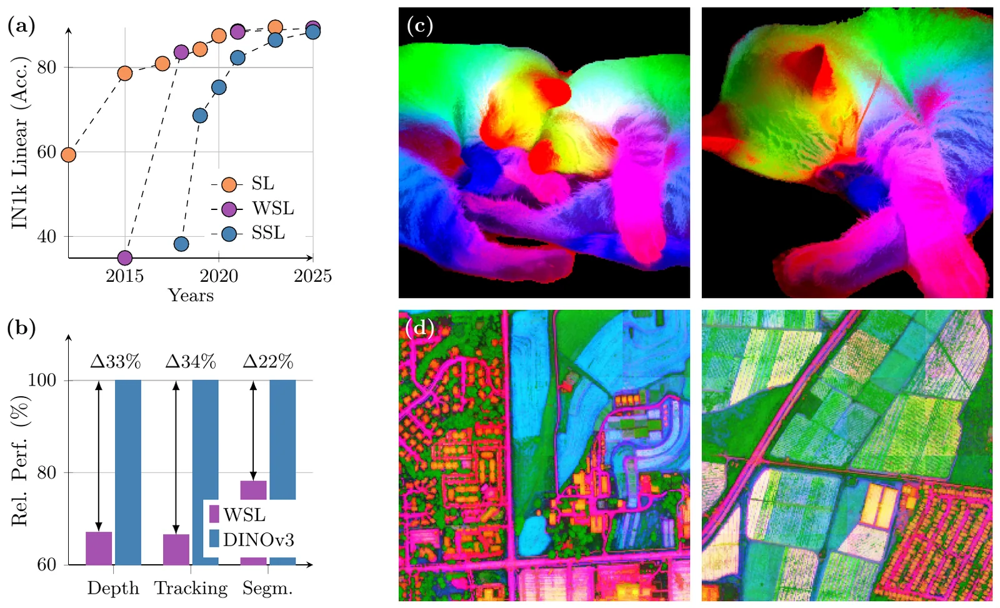
结论先说：作者认为自监督（SSL）的优势在于能吃下没有标注的海量图片，并且产出好的稠密特征；DINOv3 要把这个方向往大推，同时修好稠密特征随训练变差的问题。
弱监督（如 CLIP）需要图文对这样的元数据，SSL 不需要，所以能用在病理、生物、遥感、天文等缺元数据的领域。DINOv2 已经显示一个冻结的 SSL 骨干可以服务很多任务。但继续放大有三个问题：怎么从无标签图片池里挑有用的数据；余弦学习率调度要求事先知道训练多长；以及超过 ViT-Large（3 亿参数）以后，训练久了特征会逐渐变差，patch 相似度图上看得很清楚。
三个目标：(1) 训练跨任务、跨领域都通用的基础模型；(2) 改善 SSL 模型稠密特征的短板；(3) 发布一整套拿来就能用的模型。
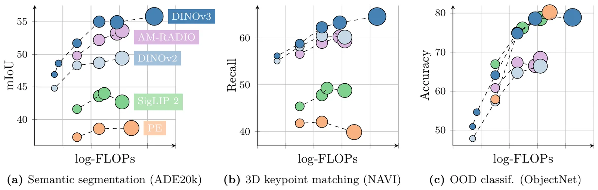
Gram anchoring。高层语义目标和稠密特征质量在大模型、长训练下相互冲突，导致稠密特征“塌缩”。Gram anchoring 缓解了这个问题，见 §4。图 3 是 4096 × 4096 输入下的余弦相似度图。
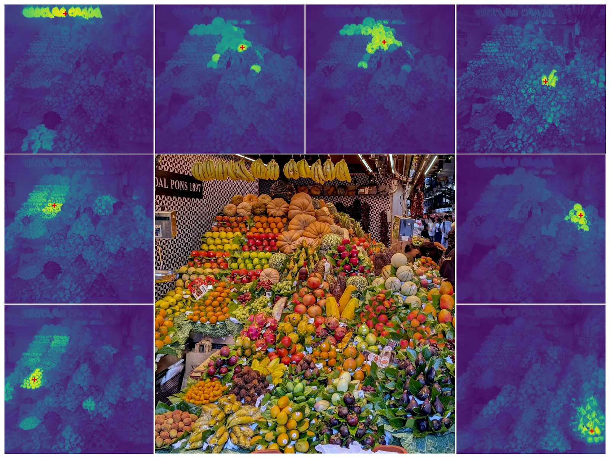
模型家族。修好稠密特征后放大就有收益，于是训练了 7B 模型，再蒸馏成 ViT-S、B、L 和 ConvNeXt 等小模型。作者说 ViT-L 在多数任务上接近 7B 教师。
四项贡献：(i) 数据，§3.1；(ii) 结构和训练（自定义 7B ViT、轴向 RoPE 与防位置伪影的正则、常数超参训练 100 万步），§3.2；(iii) Gram anchoring，§4；(iv) 高分辨率后训练和单教师多学生的高效蒸馏，§5。结果上冻结骨干就拿到 COCO 检测 66.1 mAP、ADE20k 分割 63.0 mIoU，并在卫星图像上验证了通用性（§8）。
自监督学习。早期借鉴语言模型，用图像的一部分预测另一部分（相对位置、拼图、补全、上色）。ViT 出现后以补全为主的方法流行：MAE 预测像素；data2vec、I-JEPA 等预测学到的隐空间，即 JEPA，后来扩展到视频（V-JEPA）。另一条线是图像间的判别信号：实例分类、对比学习、聚类（DeepCluster、SwAV、DINO），iBOT 把判别损失和掩码重建结合。这些方法大多难以放大。
视觉基础模型。从 AlexNet、VGG、ResNet，到 JFT-300M 上的大规模监督预训练、ViT-22B。弱监督用图片的元数据：从预测标题词到 CLIP、ALIGN 的图文对比学习，再到 OpenCLIP、MetaCLIP、SigLIP、SigLIP 2 和 Perception Encoder（PE，最大一个在 860 亿样本、全局 batch 131K 上训练）。无监督预训练放大的工作少，DINOv2 是第一个在多项任务上追平开源 CLIP 的 SSL 模型；Web-DINO 不做数据筛选直接放大，Franca 用开放数据。
稠密 Transformer 特征。多模态模型、生成模型、3D、视频和机器人都在用预训练 Transformer 的稠密特征。改善局部特征的方法包括视频时空一致性、同图不同裁切的空间对齐、相邻 patch 一致性，以及聚类局部 patch。register token（Darcet 等）不改训练目标就明显改善了特征图。“聚合式”方法（AM-RADIO、PEspatial）把 SAM、CLIP、DINOv2 等蒸馏进一个骨干，用的是让学生和教师 patch 余弦相似度接近的目标；风格迁移里的 Gram 矩阵损失也类似。DINOv3 借用 Gram 目标，但教师是自己训练早期的版本。另有一些事后改善局部特征的方法（微调、STEGO 投影、梯度拼接、patch 加权平均）和特征上采样方法；作者强调 DINOv3 原生就给出跨分辨率稳定的特征（图 4）。
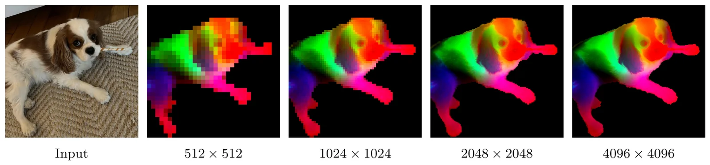
借鉴大语言模型“放大出能力”的经验，把模型和数据都放大一个数量级。本节讲第一阶段：数据（§3.1）和自监督配方（§3.2）。第二阶段（稠密特征）在 §4。
结论：聚类筛选和检索筛选各有所长，把两者和少量公开数据混在一起最好（表 1）。
收集与筛选。数据池是 Instagram 公开帖子的图片，经平台内容审核，约 170 亿张。分三部分：
采样。受 Charton 和 Kempe 启发（小而高质量的同质 batch 有益），每次迭代随机选：要么整批都来自 ImageNet-1k（占训练的 10%），要么从其他所有部分按比例混合。
消融。为省算力只训 20 万步（正式是 100 万步）：
| 数据 | IN1k k-NN | IN1k 线性 | ObjectNet | iNat 2021 | Paris 检索 |
|---|---|---|---|---|---|
| 原始数据池 | 80.1 | 84.8 | 70.3 | 70.1 | 63.3 |
| 聚类筛选 | 79.4 | 85.4 | 72.3 | 81.3 | 85.2 |
| 检索筛选 | 84.0 | 86.7 | 70.7 | 86.0 | 82.7 |
| LVD-1689M（本文混合） | 84.6 | 87.2 | 72.8 | 87.0 | 85.9 |
表 1 · 训练数据对特征质量的影响（20 万步短训练）。照录原文。表里“LVD-1689M (ours)”指的是整套混合数据，名字和 §3.1 里“聚类那一部分叫 LVD-1689M”有点混用。
结论：沿用 DINOv2 的 DINO + iBOT + Koleo 损失，模型放大到 7B，换成 RoPE，取消所有调度，用常数超参训练。
学习目标。图像级的 DINO 损失 \(\mathcal L_{\rm DINO}\)（学生的 CLS 输出对齐教师的 CLS 输出）加 patch 级的 iBOT 隐空间重建损失 \(\mathcal L_{\rm iBOT}\)（学生看被遮住的 patch，去预测教师在这些位置的输出）。两者都把 DINO 原来的“中心化”换成 SwAV 的 Sinkhorn-Knopp。每个损失有自己的投影头。对局部和全局裁切的骨干输出各用一个专门的 LayerNorm，作者说这让后期 ImageNet k-NN 稳定（+0.2），稠密任务也变好（ADE20k +1 mIoU，NYUv2 深度 RMSE −0.02）。再加 Koleo 正则让一个 batch 内的特征在空间里均匀散开，分布式实现里按 16 个样本一小组计算。第一阶段的损失：
模型结构。表 2 对比 DINOv2 和 DINOv3 的教师。位置编码换成自定义的 RoPE：每个 patch 的坐标归一化到 \([-1,1]\) 的方框里，注意力里按两个 patch 的相对位置施加旋转。为了对分辨率、尺度和长宽比更鲁棒，训练时做 RoPE-box jittering：把方框随机缩放成 \([-s,s]\)，\(s\in[0.5,2]\)。
| 教师模型 | DINOv2 | DINOv3 |
|---|---|---|
| 骨干 | ViT-giant | ViT-7B |
| 参数量 | 1.1B | 6.7B |
| 层数 | 40 | 40 |
| patch 大小 | 14 | 16 |
| 位置编码 | 可学习 | RoPE |
| register 数 | 4 | 4 |
| 嵌入维度 | 1536 | 4096 |
| FFN 类型 | SwiGLU | SwiGLU |
| FFN 隐层 | 4096 | 8192 |
| 注意力头数 | 24 | 32 |
| 每头维度 | 64 | 128 |
| DINO 头 MLP | 4096-4096-256 | 8192-8192-512 |
| DINO 原型数 | 128k | 256k |
| iBOT 头 MLP | 4096-4096-256 | 8192-8192-384 |
| iBOT 原型数 | 128k | 96k |
表 2 · DINOv2 与 DINOv3 教师结构对比。照录原文。
按表 2 估算每层：注意力 \(4d^2=4\times4096^2=67.1\)M，SwiGLU 三个矩阵 \(3\times4096\times8192=100.7\)M，合计 167.8M，40 层 6.71B，和表 2 的 6.7B、图 16 的 6716M 一致。头数也对：\(32\times128=4096\)，DINOv2 \(24\times64=1536\)。代码 vision_transformer.py 第 407–416 行 vit_7b 写的是 ffn_ratio=3，乍看是 12288，但 ffn_layers.py 第 67–68 行 SwiGLU 会乘 2/3 再对齐到 64，得到 8192，和表 2 一致。
表 2 的 iBOT 头是 8192-8192-384。三个 7B 训练配置（dinov3_vit7b16_pretrain.yaml 第 33–37 行，以及 gram_anchor、high_res_adapt 两个）都是 head_hidden_dim: 4096、head_bottleneck_dim: 384、head_n_prototypes: 98304。后两项和表 2 的 384、96k 对得上（98304 = 96 × 1024），只有隐层差一倍。DINO 头 8192 / 512 / 262144（256k）三项都对得上。哪一个是实际训练用的，未核实。
论文说“按相对位置在注意力里加偏置”。代码（rope_position_encoding.py、attention.py 第 66–82 行）是标准的旋转式：先算每个 patch 的坐标，再把 q、k 的各维两两旋转，没有加性偏置。几个细节论文没写：(1) normalize_coords="separate"，高和宽各自归一化到 \([-1,1]\)，所以非正方形输入（如 OpenWAM 的 24 × 20 网格）两个方向都铺满方框；(2) 抖动由 pos_embed_rope_rescale_coords: 2 实现（第 92–97 行），\(s\) 是在 \([1/2,2]\) 上对数均匀采样，不是均匀；(3) CLS 和 4 个 register 不参与旋转，只有 patch token 旋转（attention.py 第 75–82 行的 prefix）。base=100，每头 \(D/4\) 个频率，ViT-B 每头 64 维，所以 16 个频率。
优化。大模型配大数据，事先无法知道该训多久，所以去掉所有调度：学习率、权重衰减、教师 EMA 动量都用常数，只对学习率和教师温度做线性预热。好处是只要下游指标还在涨就可以继续训，超参也少了。AdamW，总 batch 4096 张图，分在 256 张 GPU 上。multi-crop：每张图 2 个全局裁切（256 px）和 8 个局部裁切（112 px），加上 patch 从 14 换成 16，每张图的有效序列长度和 DINOv2 相同，每个 batch 共 370 万 token。
全局裁切 \(256/16=16\)，每个 \(16^2=256\) 个 patch；局部 \(112/16=7\)，每个 49 个。每张图 \(2\times256+8\times49=904\)，乘 4096 张得 3,702,784，就是 3.7M。这个数只算 patch，没算每个裁切的 1 个 CLS 和 4 个 register（算上是 \(4096\times954=3.9\)M）。DINOv2 是 \(224/14=16\)、\(98/14=7\)，网格相同，所以“序列长度与 DINOv2 相同”成立。
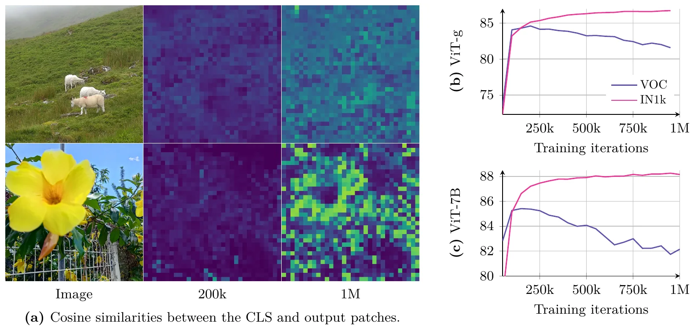
作者想让 7B 一直训下去。全局指标确实一直在涨，但稠密任务在变差（图 5b、5c），原因是 patch 之间的一致性丢了。本节先分析现象，再提出 Gram anchoring，最后看效果。
结论：长训练时 patch 特征越来越像 CLS、越来越不局部，相似度图变脏，稠密任务随之下降。
分类用 CLS token 在 ImageNet-1k 上训线性分类器；分割用 patch 特征在 Pascal VOC 上训线性层。ViT-g 和 ViT-7B 的分类都单调上升，分割都在约 20 万步后下降。图 6 显示同一个参照 patch 的相似度图：20 万步时平滑、局部；60 万步以后很多无关 patch 也和参照 patch 高度相似。
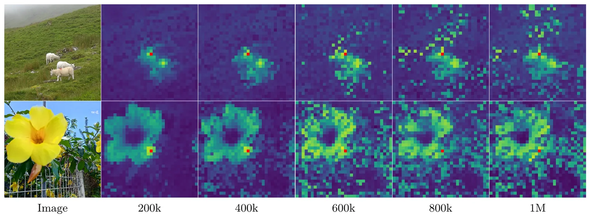
这和 Darcet 等发现的“高范数 patch 异常值”不是一回事：加了 register 后 patch 范数一直稳定。变化的是 CLS 和 patch 输出之间的余弦相似度逐渐升高（图 5a）。作者说这本身是预期的，但意味着 patch 特征的局部性在减弱。脚注提到长训练还出现了别的异常值，见附录 A。
结论：不去约束特征本身，只约束 patch 两两相似度的结构，让它接近一个早期教师；局部特征仍可以自由移动。
作者观察到学强判别特征和保持局部一致性相对独立（全局和稠密指标不相关）。DINO 加 iBOT 虽然在两者间找平衡，但越往后全局目标越占上风。新损失作用在 Gram 矩阵上，即一张图所有 patch 特征两两点积组成的矩阵。设一张图有 \(P\) 个 patch，网络宽度 \(d\)，\(\mathbf X_S\)、\(\mathbf X_G\) 分别是学生和 Gram 教师（教师网络的一个早期迭代）的 \(P\times d\) 的 L2 归一化局部特征：
只在全局裁切上算。虽然可以从一开始就用，但为了效率从 100 万步之后才开始。有意思的是，晚加也能“修复”已经很差的局部特征。之后每 1 万步把 Gram 教师更新成当前的 EMA 教师。这第二阶段叫精修（refinement），目标是：
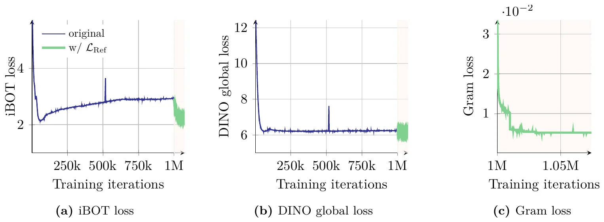
图 7：Gram 目标让 iBOT 损失下降更快，说明稳定的 Gram 教师对 iBOT 有利；对 DINO 损失没有明显影响。作者据此认为 Gram 和 iBOT 对特征的作用方向相似，DINO 不同。
效果几乎立竿见影：前 1 万步稠密任务就明显提升，每次 Gram 教师更新后 ADE20k 又有一截提升（图 8）；更长的训练还让 ObjectNet 继续变好，其他全局指标受影响很小。
loss/gram_loss.py 第 34–84 行用的是 MSELoss，即对矩阵元素取平均，不是式 (2) 的平方和。两者差 \(P^2\) 倍：256 px 全局裁切 \(P=256\)，差 65,536 倍；而且 img_level: true 时还要再对 batch 平均。所以附录 C 的 \(w_{\rm Gram}=2\) 只对代码的 MSE 写法有意义。
其他细节：(1) Gram 教师的特征取的是最后 LayerNorm 之后的 patch token（ssl_meta_arch.py 第 491 行 x_norm_patchtokens），学生取的也是最后 LayerNorm 之后、投影头之前的 patch 特征（第 478、570 行）；(2) 代码里有把负相似度置 0 的开关 remove_neg，类的默认值是开，但 7B 配置里显式关掉了（dinov3_vit7b16_gram_anchor.yaml 第 58 行）；(3) 权重不是一步到位：配置第 64–69 行让 \(w_{\rm Gram}\) 在前 1000 个 epoch（100 万步）为 0，然后在 1 个 epoch（1000 步）内按余弦升到 2.0。第 5 幕可以切换两种写法看数值。
正文和附录 C 只给了 \(w_{\rm Gram}=2\)。配置里能找到的对应：Koleo 仍是 0.1；DINO 损失总权重仍是 1，但精修配置打开了 reweight_dino_local_loss，局部裁切的 DINO 损失权重从 1 按余弦降到 0.5（dinov3_vit7b16_gram_anchor.yaml 第 25–31 行），高分辨率阶段固定 0.5。所以 \(w_D\) 很可能指局部 DINO 项降到 0.5，这是我的推断。
论文说从 100 万步开始、每 1 万步更新一次 Gram 教师；附录 C 补充“最多更新三次”。配置一致：it_first_update: 1010000、update_frequency: 10000、max_updates: 3，即在 101 万、102 万、103 万步更新。但配置的 epochs: 1200 意味着最多训到 120 万步，而图 7c 横轴只画到约 105 万步，表 20 的 GPU 小时也只按 100 万步算。精修的实际长度论文没写，未核实。
结论：Gram 教师吃 2 倍分辨率的图，再把特征图双三次下采样 2 倍，得到更平滑、更一致的 Gram 目标，ADE20k 再涨约 2 mIoU。
依据有两条：对 patch 特征做加权平均可以压掉异常 patch、增强一致性（Wysoczańska 等）；高分辨率输入给出更细的特征图。所以 Gram 教师输入 2 倍分辨率，输出用双三次插值下采样到学生的大小。图 9a 显示下采样后保留了高分辨率的一致性。因为用 RoPE，模型不需要改动就能处理不同分辨率。用下采样后的特征替代 \(\mathbf X_G\)，新的精修目标记作 \(\mathcal L_{\rm HRef}\)。
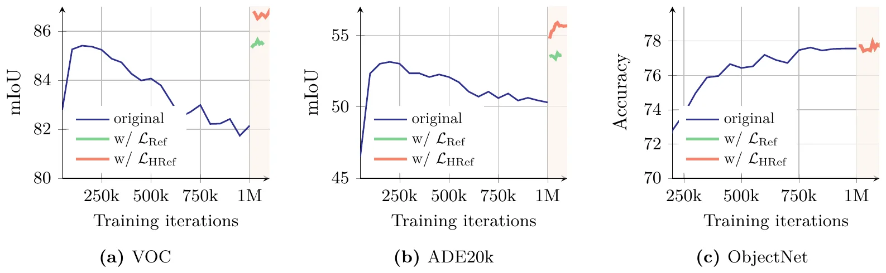
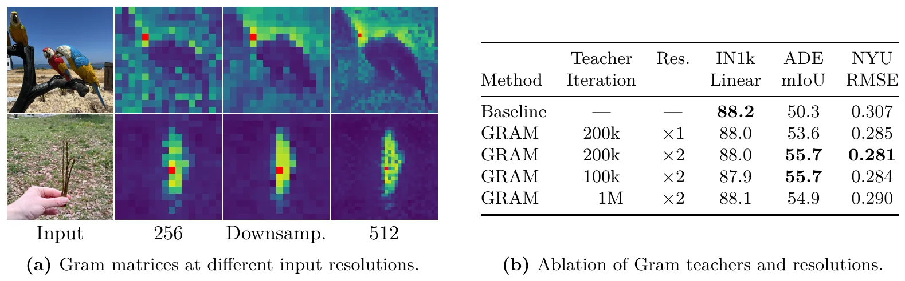
| 方法 | Gram 教师迭代 | 分辨率 | IN1k 线性 | ADE mIoU | NYU RMSE↓ |
|---|---|---|---|---|---|
| 基线 | — | — | 88.2 | 50.3 | 0.307 |
| GRAM | 200k | ×1 | 88.0 | 53.6 | 0.285 |
| GRAM | 200k | ×2 | 88.0 | 55.7 | 0.281 |
| GRAM | 100k | ×2 | 87.9 | 55.7 | 0.284 |
| GRAM | 1M | ×2 | 88.1 | 54.9 | 0.290 |
图 9b · Gram 教师的迭代和分辨率消融。照录原文。×2 比 ×1 在 ADE 上高 \(55.7-53.6=2.1\)，即正文的“+2 mIoU”。
Gram 教师取 10 万步还是 20 万步差别不大；取 100 万步的就变差，因为那时它自己的一致性已经不好了。图 10 在 1024 × 1024 输入上对比精修前后的相似度图。
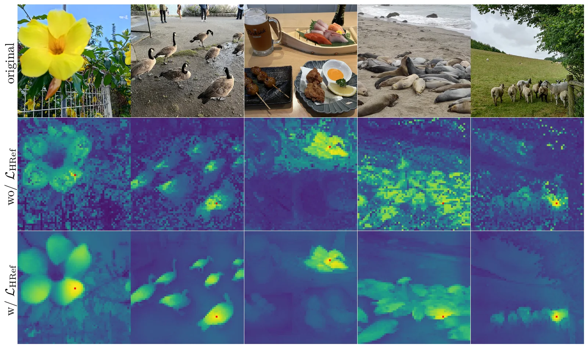
自己画的 · 11 幕 3D 框架动画
整个流程拆成 11 幕：数据整理、ViT 结构与 RoPE、multi-crop 和 DINO/iBOT 自蒸馏、稠密特征变差、当场计算的 Gram anchoring（第 5 幕）、高分辨率 Gram 教师、高分辨率适配、单教师多学生蒸馏、文本对齐、稠密特征用法、OpenWAM 的接法（第 11 幕）。可以暂停、拖进度、旋转画面、切换开关。玩具数字是当场算的，并标明是玩具。
三个后训练步骤：高分辨率适配（§5.1）、蒸馏出小模型（§5.2）、文本对齐（§5.3）。
结论：再训 1 万步混合分辨率，Gram 教师换成 7B 本身；局部特征在大分辨率下明显变好，训练没见过的 4K 也能用。
主训练用 256 分辨率，patch 16 时序列长度与 DINOv2（224、patch 14）相同。但很多应用要 512 以上，而且分辨率不固定。于是加一步高分辨率适配：每个 mini-batch 采样不同尺寸的全局/局部裁切对，全局从 {512, 768} 取，局部从 {112, 168, 224, 336} 取，再训 1 万步。和主训练一样，这一步也加 Gram anchoring，Gram 教师是 7B 模型本身。作者说这一项必不可少，没有它稠密任务会显著变差。
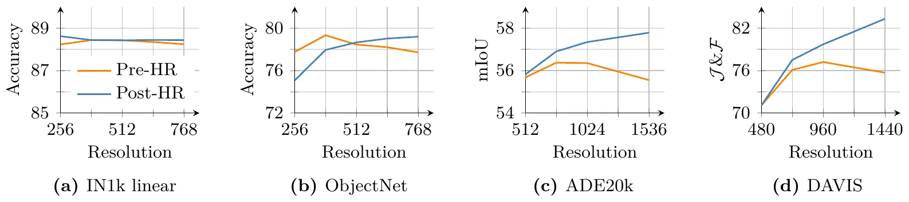
图 11：分类小幅提升且对分辨率稳定；ObjectNet 在低分辨率略降、高分辨率提升；分割和跟踪随分辨率越大越好。适配后的模型支持远超训练最大分辨率 768 的输入，4K 以上的特征图仍稳定（图 4）。
附录 C 给的五组（全局, 局部, Gram 教师）裁切和概率，和 dinov3_vit7b16_high_res_adapt.yaml 第 162–185 行完全一致：(512, 112, 768) 0.3、(768, 112, 1152) 0.3、(768, 168, 1152) 0.3、(768, 224, 1152) 0.05、(768, 336, 1152) 0.05，概率和为 1。注意这里 Gram 教师是全局裁切的 1.5 倍，不是 §4.3 的 2 倍。
不一致的地方：配置 epochs: 30 × OFFICIAL_EPOCH_LENGTH: 1000 = 3 万步，正文写“额外训练 1 万步”；学习率在前 10 个 epoch 从 0 余弦升到 1.25e-5（再乘 batch 缩放），之后保持。Gram 权重固定 1.5（第 63–68 行），论文没给这一项。Gram 教师不再更新（rep_update: false），和“用 7B 作 Gram 教师”一致。
结论：用固定的 7B 当教师，同样的损失，一次训练同时蒸馏多个学生，共享教师推理。
一族模型。蒸馏目标和第一阶段相同，但教师不是学生的 EMA，而是固定的 7B。蒸馏时没看到 patch 一致性问题，所以不用 Gram anchoring。学生包括标准的 ViT-S（2100 万参数）、B（8600 万）、L（3 亿），以及自定义的 ViT-S+（2900 万）和 ViT-H+（8 亿）。先训 100 万步，再做 25 万步余弦学习率冷却，然后做 §5.1 的高分辨率阶段（不加 Gram）。
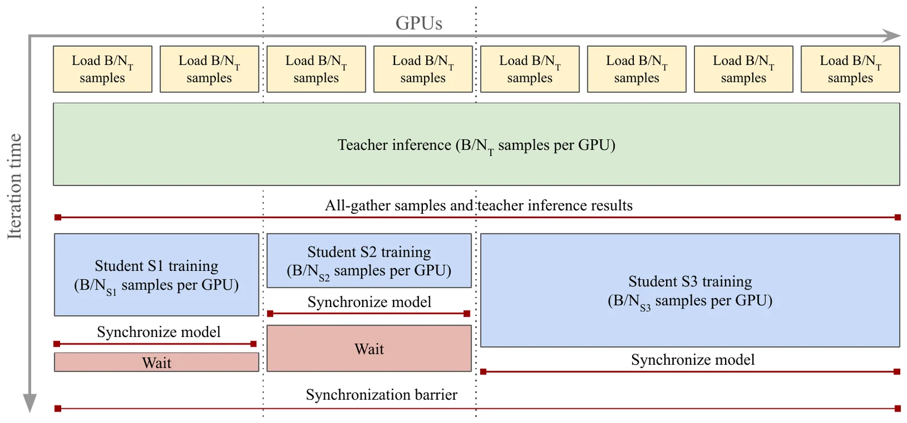
高效多学生蒸馏。大教师的推理比学生贵几个数量级。设单个样本的教师推理代价 \(C_T\)、学生训练代价 \(C_S\)。单教师单学生时每张卡花 \(B/N\times C_T\) 和 \(B/N\times C_S\)。多学生时，学生 \(S_i\) 分到 \(N_{S_i}\) 张卡，全部 \(N_T=\sum N_{S_i}\) 张卡一起做教师推理，每卡 \(B/N_T\times C_T\)；all-gather 之后各组做 \(B/N_{S_i}\times C_{S_i}\) 的学生训练。所以多加一个学生会降低每卡的教师推理负担，总计算只多出这个学生的训练代价。按各学生的迭代时间调整 GPU 数，减少等待。
dinov3_vitl16_lvd1689m_distilled.yaml 第 151–174 行给出四个学生和 GPU 分组：ViT-S 第 0–48 号卡，ViT-S+ 48–96，ViT-B 96–176，ViT-L 176–296，即 48、48、80、120 张，共 296 张；global_batch_size: 1920。学生越大分到的卡越多，符合“让每组迭代时间相近”的说法。但这个配置的 epochs: 20 × 1250 = 2.5 万步，学习率从 0 余弦升到 5e-5，和正文的“100 万步加 25 万步冷却”对不上，路径也都是占位符，看起来是示例模板。ViT-H+ 和 ConvNeXt 不在这一组里（ConvNeXt 有单独的配置目录）。
结论：冻结视觉骨干，按 dino.txt 的方法从头训练文本编码器做对比学习；视觉侧拼接 CLS 和 patch 均值，让局部特征也对齐到文本。
CLIP 只学全局对齐，难以捕捉细粒度的局部对应。LiT 范式显示，用冻结的自监督视觉骨干也能做好图文对齐，还省算力。DINOv3 按 Jose 等（dino.txt）的方法：视觉编码器冻结，上面加两层可训练的 Transformer；把 patch 嵌入的均值和 CLS 输出拼起来再去和文本嵌入匹配，这样全局和局部都对齐到文本；数据筛选也沿用 dino.txt。代码配置 eval/text/configs/dinov3_vitl_text.yaml 里 vision_model_num_head_blocks: 2、vision_model_patch_tokens_pooler_type: mean、骨干冻结，与正文一致。
本节评测旗舰 7B 模型，除特别说明外骨干始终冻结，只用它的表示。§6.1 稠密特征，§6.2 全局特征，§6.3 把 DINOv3 当作复杂系统的底座。
都用最后一层冻结的 patch 特征，评测方式包括：定性可视化、稠密线性探针、无参数方法（3D 对应、物体发现、跟踪）、轻量注意力探针（视频分类）。
基线。弱监督：PE Core、SigLIP 2。自监督：DINOv2（带 register）、Web-DINO、Franca。聚合式：AM-RADIOv2.5（从 DINOv2、CLIP、DFN、SAM 蒸馏）和 PEspatial（把 SAM 2 蒸馏进 PE core）。每个基线取最强的公开模型。
把稠密特征 PCA 到 3 维映射成 RGB。PCA 有符号歧义（8 种）和主成分到颜色的任意映射（6 种），作者把所有组合都试了，报告视觉上最好的一种。DINOv3 的特征更锐利、噪声少、语义一致性好。
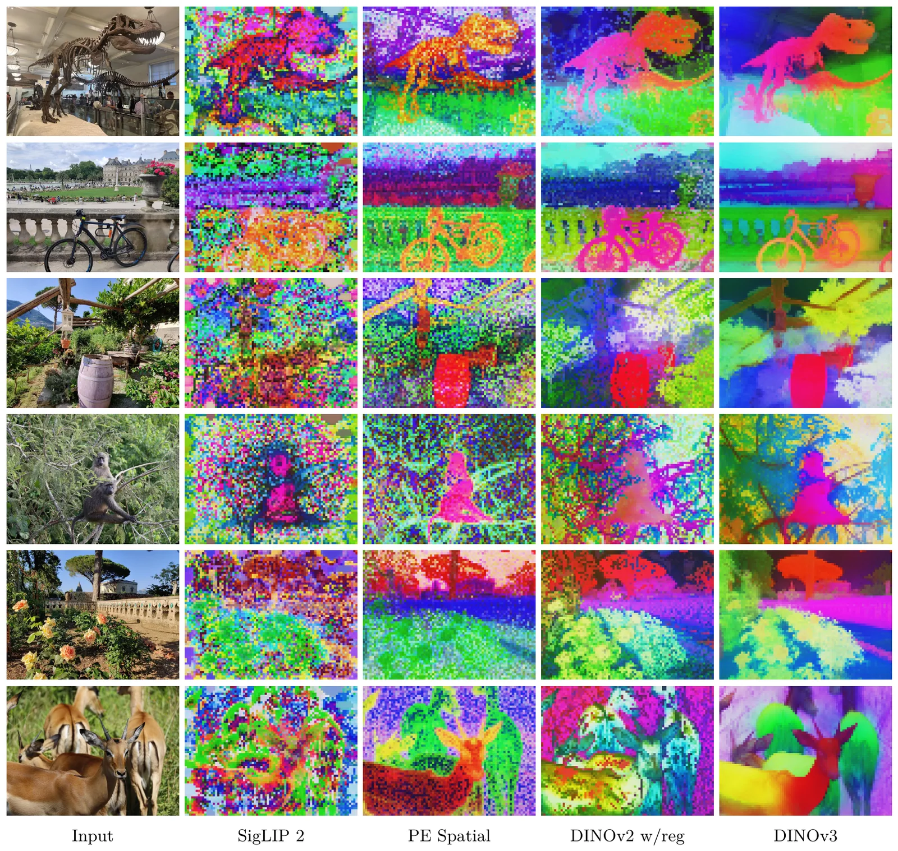
结论：只用一个线性层，DINOv3 在三个分割和两个深度数据集上都最好；ADE20k 55.9 已离当时最好成绩 63.0 不远。
分割在 ADE20k、Cityscapes、PASCAL VOC 2012 上报 mIoU；深度在 NYUv2 和 KITTI 上报 RMSE。输入分辨率调到 1024 个 patch token（patch 14 用 448，patch 16 用 512）。
| 方法 | ViT | ADE20k | Citysc. | VOC | NYUv2↓ | KITTI↓ |
|---|---|---|---|---|---|---|
| 聚合式 | ||||||
| AM-RADIOv2.5 | g/14 | 53.0 | 78.4 | 85.4 | 0.340 | 2.918 |
| PEspatial | G/14 | 49.3 | 73.2 | 82.7 | 0.362 | 3.082 |
| 弱监督 | ||||||
| SigLIP 2 | g/16 | 42.7 | 64.8 | 72.7 | 0.494 | 3.273 |
| PEcore | G/14 | 38.9 | 61.1 | 69.2 | 0.590 | 4.119 |
| 自监督 | ||||||
| Franca | g/14 | 46.3 | 68.7 | 82.9 | 0.445 | 3.140 |
| DINOv2 | g/14 | 49.5 | 75.6 | 83.1 | 0.372 | 2.624 |
| Web-DINO | 7B/14 | 42.7 | 68.3 | 76.1 | 0.466 | 3.158 |
| DINOv3 | 7B/16 | 55.9 | 81.1 | 86.6 | 0.309 | 2.346 |
表 3 · 冻结骨干的稠密线性探针。照录原文。
ADE20k 上比自监督基线高 6 以上、比弱监督高 13 以上、比 PEspatial 高 6 以上、比 AM-RADIO 高近 3；后两者都从重监督的 SAM 蒸馏而来。深度上同样领先，KITTI 比 DINOv2 低 0.278 RMSE。PEspatial 和 AM-RADIO 在 NYU 上强，但 KITTI 不如 DINOv2。
正文说 DINOv3 在 Cityscapes 上“超过 AM-RADIOv2.5 2.5 个点”，表 3 是 \(81.1-78.4=2.7\)。同一段的其他差值都对得上：ADE20k 比 DINOv2 高 \(55.9-49.5=6.4\)，比 SigLIP 2 高 13.2，比 PEspatial 高 6.6，比 AM-RADIO 高 2.9；Cityscapes 比其余骨干至少高 \(81.1-75.6=5.5\)；KITTI 比 DINOv2 低 \(2.624-2.346=0.278\)。
按 Probe3D 的协议评测多视角一致性：同一关键点在不同视角下的 patch 特征是否相似。几何对应（同一物体实例）用 NAVI，语义对应（同类不同实例）用 SPair，都报对应召回率。
| 方法 | ViT | NAVI（几何） | SPair（语义） |
|---|---|---|---|
| AM-RADIOv2.5 | g/14 | 59.4 | 56.8 |
| PEspatial | G/14 | 53.8 | 49.6 |
| SigLIP 2 | g/16 | 49.4 | 42.6 |
| PEcore | G/14 | 39.9 | 23.1 |
| Franca | g/14 | 54.6 | 51.0 |
| DINOv2 | g/14 | 60.1 | 56.1 |
| Web-DINO | 7B/14 | 55.0 | 32.2 |
| DINOv3 | 7B/16 | 64.4 | 58.7 |
表 4 · 3D 关键点对应（召回率）。照录原文；分组同表 3。
几何对应比第二名 DINOv2 高 4.3。弱监督模型差，说明缺乏 3D 意识。带 SAM 蒸馏的里，AM-RADIO 接近 DINOv2，PEspatial 落后，甚至不如 Franca。作者认为自监督是这项任务的关键。语义对应同理，比 DINOv2 高 2.6、比 AM-RADIO 高 1.9。
正文说 PEspatial 在 NAVI 上比 DINOv2 低 11.6，表 4 是 \(53.8-60.1=-6.3\)。按相对值算是 \(-6.3/60.1=-10.5\%\)，也不是 11.6。同一句里“比 Franca 低 0.8”（\(53.8-54.6\)）以及其他差值（+4.3、+2.6、+1.9）都对得上。11.6 的来源我找不到。
任务是不用标注、不分类别地把图里的物体框出来。用非参数的图割方法 TokenCut，在 VOC 2007、VOC 2012、COCO-20k 上报 CorLoc。为公平比较不同特征分布，对 TokenCut 的相似度阈值做了搜索，且所有模型都用输出特征（原版 DINO 最好的结果用的是最后一层注意力的 key，但这个手工选择不能推广）。
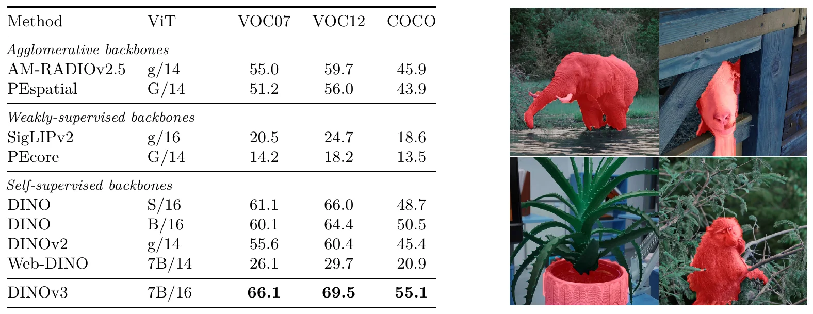
| 方法 | ViT | VOC07 | VOC12 | COCO |
|---|---|---|---|---|
| AM-RADIOv2.5 | g/14 | 55.0 | 59.7 | 45.9 |
| PEspatial | G/14 | 51.2 | 56.0 | 43.9 |
| SigLIPv2 | g/16 | 20.5 | 24.7 | 18.6 |
| PEcore | G/14 | 14.2 | 18.2 | 13.5 |
| DINO | S/16 | 61.1 | 66.0 | 48.7 |
| DINO | B/16 | 60.1 | 64.4 | 50.5 |
| DINOv2 | g/14 | 55.6 | 60.4 | 45.4 |
| Web-DINO | 7B/14 | 26.1 | 29.7 | 20.9 |
| DINOv3 | 7B/16 | 66.1 | 69.5 | 55.1 |
图 14 左表 · 无监督物体发现（CorLoc）。照录原文。
原版 DINO 设了很高的标杆。DINOv2 稠密任务强，但物体发现失败，部分原因是特征里的伪影。DINOv3 超过两代前作和所有其他骨干。
正文说 DINOv3 在 VOC 2007 上比前作高 5.9。按表：比 DINO S/16 高 \(66.1-61.1=5.0\)，比 DINO B/16 高 6.0，比 DINOv2 高 10.5。没有一项是 5.9。最接近的是 DINO B/16 的 6.0，可能是表或正文改过一次数。未核实。
测时间一致性：给第一帧的实例掩码，把标签传播到后续帧。数据集 DAVIS 2017、YouTube-VOS、MOSE，指标 J&F。按 Jabri 等用非参数的标签传播（帧间 patch 相似度）。三种分辨率：短边 420/480（S）、840/960（M）、1260/1440（L），分别对应 patch 14/16。
| 方法 | ViT | DAVIS | YouTube-VOS | MOSE | ||||||
|---|---|---|---|---|---|---|---|---|---|---|
| S | M | L | S | M | L | S | M | L | ||
| AM-RADIOv2.5 | g/14 | 66.5 | 77.3 | 81.4 | 70.1 | 78.1 | 79.2 | 44.0 | 52.6 | 54.3 |
| PEspatial | G/14 | 68.4 | 74.5 | 70.5 | 68.5 | 67.5 | 55.6 | 39.3 | 40.2 | 34.0 |
| SigLIP 2 | g/16 | 56.1 | 62.3 | 62.9 | 52.0 | 57.3 | 55.1 | 28.0 | 30.3 | 29.2 |
| PEcore | G/14 | 48.2 | 53.1 | 49.8 | 34.7 | 33.0 | 25.3 | 17.8 | 19.0 | 15.4 |
| Franca | g/14 | 61.8 | 66.9 | 66.5 | 67.3 | 70.5 | 67.9 | 40.3 | 42.6 | 41.9 |
| DINOv2 | g/14 | 63.9 | 73.6 | 76.6 | 65.6 | 73.5 | 74.6 | 40.4 | 47.6 | 48.5 |
| Web-DINO | 7B/14 | 57.2 | 65.8 | 69.5 | 43.9 | 49.6 | 50.9 | 24.9 | 29.9 | 31.1 |
| DINOv3 | 7B/16 | 71.1 | 79.7 | 83.3 | 74.1 | 80.2 | 80.7 | 46.0 | 53.9 | 55.6 |
表 5 · 视频分割跟踪（J&F-mean）。照录原文。
DAVIS-L 83.3，比 DINOv2 高 6.7；分辨率越高越好。SigLIP 2 和 PEcore 随分辨率几乎不变，PEspatial 反而变差。一个只在图像上训练的模型就能跟踪视频里的物体（图 15），作者认为它适合作视频模型的嵌入。
表 5 的图注写 L 对应短边 “1260/1140”，正文 §6.1.5 写 “1260/1440”。按“patch 14/16 时 token 数相同”：\(1260/14=90\)，\(1440/16=90\)，而 \(1140/16=71.25\) 不是整数。所以 1140 是笔误，应为 1440。
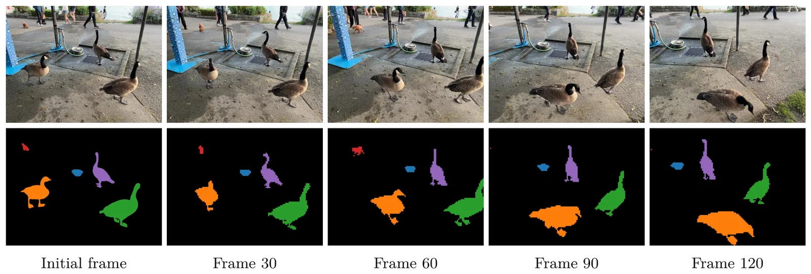
仿照 V-JEPA 2：每帧单独提 patch 特征，上面训一个 4 层 Transformer 的注意力探针。可以每个视频一个片段，或用测试时增强（TTA，3 个空间 × 2 个时间裁切平均）。数据集 UCF101、Something-Something V2、Kinetics-400，额外对比视频 SSL 模型 V-JEPA 2。
| 方法 | ViT | UCF101 | SSv2 | K400 | |||
|---|---|---|---|---|---|---|---|
| 单片段 | TTA | 单片段 | TTA | 单片段 | TTA | ||
| AM-RADIOv2.5 | g/14 | 92.8 | 92.5 | 69.1 | 70.0 | 84.8 | 85.2 |
| PEspatial | G/14 | 92.7 | 92.8 | 66.4 | 68.4 | 83.5 | 84.8 |
| SigLIP 2 | g/16 | 93.6 | 94.2 | 68.8 | 70.2 | 86.9 | 87.7 |
| PEcore | G/14 | 93.1 | 93.3 | 69.0 | 70.4 | 87.9 | 88.8 |
| DINOv2 | g/14 | 93.5 | 93.8 | 67.4 | 68.4 | 84.4 | 85.6 |
| V-JEPA 2 | g/16 | 94.0 | 93.8 | 73.8 | 75.4 | 83.3 | 84.3 |
| Web-DINO | 7B/14 | 93.9 | 94.1 | 67.3 | 68.1 | 86.8 | 87.2 |
| DINOv3 | 7B/16 | 93.5 | 93.5 | 70.1 | 70.8 | 87.8 | 88.2 |
表 6 · 注意力探针视频分类 top-1。照录原文；加粗是我按每列最大值标的。
探针本身有好几层自注意力，模型间差距不明显。DINOv3 和 PEcore、SigLIP 2 同一档，明显好于 DINOv2 和 AM-RADIO。SSv2 更依赖运动理解，专门的视频模型 V-JEPA 2 最好；在这上面 DINOv3 领先弱监督模型的幅度略大。
线性探针分类（§6.2.1）和实例检索（§6.2.2）。基线另加 AIMv2 和 EVA-CLIP-18B。
结论：第一次有自监督模型在图像分类上追平弱监督和监督模型；分布外鲁棒性大幅超过 DINOv2。
在 ImageNet-train 上训线性分类器（用 CLS），在 val 上选超参，然后迁移到 ImageNet-V2、ReaL、Rendition、Sketch、Adversarial、ObjectNet、Corruptions（mCE，越低越好）。监督模型的数字引自 Dehghani 等，协议略有不同。
| 方法 | ViT | Val | V2 | ReaL | R | S | A | C↓ | Obj. |
|---|---|---|---|---|---|---|---|---|---|
| 监督（*协议不同） | |||||||||
| Zhai 等 (2022a)* | G/14 | 89.0 | 81.3 | 90.6 | 91.7 | — | 78.8 | — | 69.6 |
| Chen 等 (2023)* | e/14 | 89.3 | 82.5 | 90.7 | 94.3 | — | 81.6 | — | 71.5 |
| Dehghani 等 (2023)* | 22B/14 | 89.5 | 83.2 | 90.9 | 94.3 | — | 83.8 | — | 74.3 |
| 聚合式 | |||||||||
| AM-RADIOv2.5 | g/14 | 88.0 | 80.2 | 90.3 | 83.8 | 67.1 | 81.3 | 27.1 | 68.4 |
| 弱监督 | |||||||||
| PEcore | G/14 | 89.3 | 81.6 | 90.4 | 92.2 | 71.9 | 89.0 | 22.7 | 80.2 |
| SigLIP 2 | g/16 | 89.1 | 81.6 | 90.5 | 92.2 | 71.8 | 84.6 | 30.0 | 78.6 |
| AIMv2 | 3B/14 | 87.9 | 79.5 | 89.7 | 82.3 | 67.1 | 74.5 | 29.5 | 69.0 |
| EVA-CLIP | 18B/14 | 87.9 | 79.3 | 89.5 | 85.2 | 64.0 | 81.6 | 33.0 | 71.9 |
| 自监督 | |||||||||
| Web-DINO | 7B/14 | 85.9 | 77.1 | 88.6 | 75.6 | 64.0 | 71.6 | 31.2 | 69.7 |
| Franca | g/14 | 84.8 | 75.3 | 89.2 | 67.6 | 49.5 | 56.5 | 40.0 | 54.5 |
| DINOv2 | g/14 | 87.3 | 79.5 | 89.9 | 81.1 | 65.4 | 81.7 | 24.1 | 66.4 |
| DINOv3 | 7B/16 | 88.4 | 81.4 | 90.4 | 91.1 | 71.3 | 86.9 | 19.6 | 79.0 |
表 7 · ImageNet-1k 线性探针及迁移。输入调到 1024 个 patch token。照录原文。
比 DINOv2：R +10、Sketch +6、ObjectNet +13。最强的弱监督模型（SigLIP 2、PE）在 A 和 ObjectNet 上已超过监督的 ViT-22B；DINOv3 在 R、Sketch 上与之相当，A 和 ObjectNet 紧跟 PE、超过 SigLIP 2。ImageNet val 落后 SigLIP 2 和 PE 0.7 到 0.9，但更“干净”的 V2 和 ReaL 几乎一样。Corruptions 最好。
细粒度分类（表 8）。Places205、iNaturalist 2018/2021，以及 12 个小数据集的平均（Fine-S，逐项见附录表 22）。DINOv3 超过以前所有 SSL 方法，与弱监督相当；iNat21 达到 89.8，高于 PEcore 的 87.0。
非参数检索：按 CLS 的余弦相似度给库里的图排序。数据集：Oxford、Paris（地标，mAP）、Met（大都会博物馆艺术品，GAP）、AmsterTime（阿姆斯特丹街景对老照片，mAP）。DINOv3 全面最好，比第二名 DINOv2 在 Met 上高 10.8、AmsterTime 高 7.6；弱监督模型远远落后，除了从 DINOv2 蒸馏的 AM-RADIO。
| 方法 | ViT | Fine-S | Places | iNat18 | iNat21 | Oxford-H | Paris-H | Met (GAP) | AmsterTime |
|---|---|---|---|---|---|---|---|---|---|
| AM-RADIOv2.5 | g/14 | 93.9 | 70.2 | 79.0 | 83.7 | 47.5 | 85.7 | 30.5 | 23.1 |
| SigLIP 2 | g/16 | 93.7 | 70.5 | 80.7 | 82.7 | 25.1 | 60.9 | 13.9 | 15.5 |
| PEcore | G/14 | 94.5 | 71.3 | 86.6 | 87.0 | 32.7 | 68.9 | 10.6 | 23.1 |
| AIMv2 | 3B/14 | 92.9 | 70.7 | 80.8 | 83.2 | 28.8 | 71.4 | 29.5 | 14.6 |
| EVA CLIP | 18B/14 | 92.9 | 71.1 | 80.7 | 83.5 | 27.1 | 65.6 | 0.5 | 18.9 |
| Franca | g/14 | 87.7 | 64.6 | 61.4 | 70.6 | 14.3 | 51.6 | 27.2 | 21.1 |
| DINOv2 | g/14 | 92.6 | 68.2 | 80.7 | 86.1 | 58.2 | 84.6 | 44.6 | 48.9 |
| Web-DINO | 7B/14 | 90.2 | 69.6 | 65.3 | 74.1 | 31.2 | 80.3 | 35.2 | 30.6 |
| DINOv3 | 7B/16 | 93.0 | 70.0 | 85.6 | 89.8 | 60.7 | 87.1 | 55.4 | 56.5 |
表 8（前四列，细粒度分类）和表 9（后四列，实例识别）合在一起。照录原文。
为免逐条写，这里列出我核过且一致的：§6.2.1 比 DINOv2 的 R \(91.1-81.1=10.0\)、Sketch \(71.3-65.4=5.9\)（“+6”）、ObjectNet \(79.0-66.4=12.6\)（“+13”）；val 落后 \(89.1-88.4=0.7\) 和 \(89.3-88.4=0.9\)；iNat21 89.8 对 87.0。§6.2.2 Met \(55.4-44.6=10.8\)、AmsterTime \(56.5-48.9=7.6\)。§6.1.5 DAVIS-L \(83.3-76.6=6.7\)。§7.1 ViT-L ADE \(54.9-48.8=6.1\)（“超过 6”），ViT-B \(51.8-48.4=3.4\)（“约 3”）。§7.2 CNX-T \(42.7-24.8=17.9\)、CNX-L \(47.8-33.3=14.5\)、IN-ReAL \(86.6-87.3=-0.7\)。§8.2 MAE 2.4→2.2、3.4→3.2、2.42→2.02。
前两节是“探针”式评测，排除了干扰但不足以展示上限。本节在冻结的 DINOv3 上训练较重的解码器，和专门的最强方法比：检测（Plain-DETR）、分割（Mask2Former）、单目深度（Depth Anything）、3D 理解（VGGT）。作者说这些只是探索。
在 COCO val2017 上报 mAP，并在 COCO-O（6 种分布偏移）上报 mAP 和有效鲁棒性 ER。COCO 只有 11.8 万张训练图，所以先在 Objects365 上预训练解码器。改动：不把 Transformer 编码器融进骨干，而像原版 DETR 那样单独放，这样骨干训练和推理都完全冻结；作者说这是第一个用冻结骨干的有竞争力检测模型。训练：Objects365 上 1536 分辨率 22 个 epoch，再 2048 分辨率 1 个 epoch，然后 COCO 上 2048 分辨率 12 个 epoch；推理 2048；可选 TTA（1536 到 2880 多分辨率）。
| 模型 | 检测器 | 编码器 | 解码器 | 可训练 | COCO 单尺度 | COCO TTA | COCO-O mAP | ER |
|---|---|---|---|---|---|---|---|---|
| EVA-02 | Cascade | 300M | — | 300M | 64.1 | — | 63.6 | 34.7 |
| InternImage-G | DINO | 6B | — | 6B | 65.1 | 65.3 | — | — |
| EVA-02 | Co-DETR | 300M | — | 300M | 65.4 | 65.9 | 63.7 | 34.3 |
| PEspatial | DETA | 1.9B | 50M | 2B | 65.3 | 66.0 | 64.0 | 34.7 |
| DINOv3 | Plain-DETR | 7B | 100M | 100M | 65.6 | 66.1 | 66.4 | 36.8 |
表 10 · 目标检测。照录原文。原表的 “FT”（是否微调骨干）一列只是勾选标记，PDF 文本层没有勾号，这里省去；按正文只有 DINOv3 不微调。InternImage-G 未发布，无法算 COCO-O。
100M 参数的轻量检测器就到了最好水平，COCO-O 的优势更明显，可训练参数比所有对手都少（对手最少也 3 亿）。作者强调，一次骨干前向就能支撑多个任务，省算力。
ADE20k（150 类，2 万训练 / 2 千验证），训练时额外用 COCO-Stuff（16.4 万张，171 类）和 Hypersim（7.7 万张，40 类）。解码器是 ViT-Adapter + Mask2Former，但骨干冻结；为了不改骨干特征，去掉 ViT-Adapter 的 injector；嵌入维度从 1024 提到 2048 以接 4096 维输出。COCO-Stuff 8 万步 → Hypersim 1 万步 → ADE20k 2 万步，全程 896 分辨率。
| 模型 | 编码器 | 解码器 | 可训练 | 单尺度 | TTA |
|---|---|---|---|---|---|
| BEIT3 | 1.0B | 550M | 1.6B | 62.0 | 62.8 |
| InternImage-H | 1.1B | 230M | 1.3B | 62.5 | 62.9 |
| ONE-PEACE | 1.5B | 710M | 2.2B | 62.0 | 63.0 |
| DINOv3 | 7B | 927M | 927M | 62.6 | 63.0 |
表 11 · ADE20k 语义分割（mIoU，896 分辨率）。照录原文。
与 ONE-PEACE 并列 63.0，并在 COCO-Stuff 和 VOC 2012 上超过以前所有模型（附录表 24）。作者指出 16 像素的 patch 让预测粒度偏粗，所以才需要 ViT-Adapter；DINOv3 在 4096 输入下能给出 512 token 宽的特征图，希望以后能不靠重解码器。
沿用 Depth Anything V2（DAv2）：DPT 头接 DINOv3 四个等间隔层的特征，在 DAv2 的合成数据上用 DAv2 的损失训练，分辨率提到 1024 × 768。与 DAv2 不同，骨干冻结；DPT 头放大以发挥 7B 的大特征。零样本尺度不变设置，在 NYUv2、KITTI、ETH3D、ScanNet、DIODE 上报 ARel（↓）和 δ1（↑）。
| 方法 | NYUv2 | KITTI | ETH3D | ScanNet | DIODE | |||||
|---|---|---|---|---|---|---|---|---|---|---|
| ARel↓ | δ1↑ | ARel↓ | δ1↑ | ARel↓ | δ1↑ | ARel↓ | δ1↑ | ARel↓ | δ1↑ | |
| MiDaS | 11.1 | 88.5 | 23.6 | 63.0 | 18.4 | 75.2 | 12.1 | 84.6 | 33.2 | 71.5 |
| LeReS | 9.0 | 91.6 | 14.9 | 78.4 | 17.1 | 77.7 | 9.1 | 91.7 | 27.1 | 76.6 |
| Omnidata | 7.4 | 94.5 | 14.9 | 83.5 | 16.6 | 77.8 | 7.5 | 93.6 | 33.9 | 74.2 |
| DPT | 9.8 | 90.3 | 10.0 | 90.1 | 7.8 | 94.6 | 8.2 | 93.4 | 18.2 | 75.8 |
| Marigold | 5.5 | 96.4 | 9.9 | 91.6 | 6.5 | 96.0 | 6.4 | 95.1 | 30.8 | 77.3 |
| DAv2 (ViT-g) | 4.4 | 97.9 | 7.5 | 94.7 | 13.1 | 86.5 | — | — | — | — |
| DINOv3 | 4.3 | 98.0 | 7.3 | 96.7 | 5.4 | 97.5 | 4.4 | 98.1 | 25.6 | 82.2 |
表 12 · 相对单目深度估计。照录原文。
除 DIODE 的 ARel 不如 DPT 外全部最好，而且只有它的骨干冻结。这也说明 DINOv3 继承了 DINOv2 从合成数据迁移到真实数据的能力。
VGGT 在大量 3D 标注数据上训练，一次前向估计相机内外参、点图和深度。原版用 DINOv2 ViT-L/14，这里换成 DINOv3 ViT-L/16，跑同样的训练流程（包括微调骨干），分辨率从 518 改成 592 以适配 patch 16。评测：Re10K 和 CO3Dv2 相机位姿（AUC@30）、DTU 多视图深度（Acc、Comp、Overall，越低越好）、ScanNet-1500 双视图匹配（AUC@5/@10）。
| 方法 | Re10K | CO3Dv2 | 方法 | DTU Acc↓ | Comp↓ | Overall↓ | 方法 | AUC@5 | AUC@10 |
|---|---|---|---|---|---|---|---|---|---|
| DUSt3R | 67.7 | 76.7 | Gipuma* | 0.283 | 0.873 | 0.578 | SuperGlue | 16.2 | 33.8 |
| MASt3R | 76.4 | 81.8 | CIDER* | 0.417 | 0.437 | 0.427 | LoFTR | 22.1 | 40.8 |
| VGGSfM v2 | 78.9 | 83.4 | MASt3R* | 0.403 | 0.344 | 0.374 | DKM | 29.4 | 50.7 |
| CUT3R | 75.3 | 82.8 | GeoMVSNet* | 0.331 | 0.259 | 0.295 | CasMTR | 27.1 | 47.0 |
| FLARE | 78.8 | 83.3 | DUSt3R | 2.677 | 0.805 | 1.741 | Roma | 31.8 | 53.4 |
| VGGT | 85.3 | 88.2 | VGGT | 0.389 | 0.374 | 0.382 | VGGT | 33.9 | 55.2 |
| DINOv3 | 86.3 | 89.6 | DINOv3 | 0.375 | 0.361 | 0.368 | DINOv3 | 35.2 | 56.1 |
表 13 · VGGT 中换用 DINOv3 ViT-L。三个子表 (a)(b)(c) 并排。* 表示使用真值相机。照录原文。
三类任务都超过原 VGGT。作者预期换成 7B 还会更好。
家族包括 ViT 和 ConvNeXt（CNX）两类，参数量和推理计算量见图 16a。§7.1 ViT，§7.2 ConvNeXt，§7.3 文本对齐的 ViT-L。
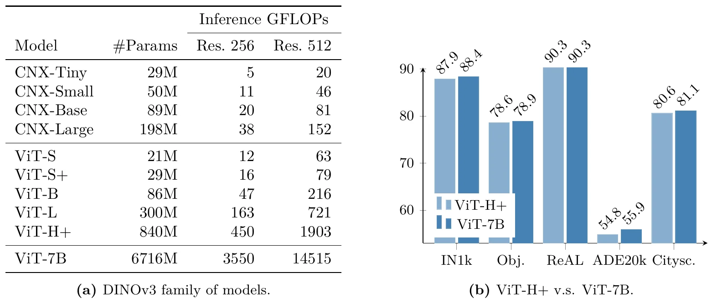
| 模型 | 参数 | GFLOPs@256 | GFLOPs@512 |
|---|---|---|---|
| CNX-Tiny | 29M | 5 | 20 |
| CNX-Small | 50M | 11 | 46 |
| CNX-Base | 89M | 20 | 81 |
| CNX-Large | 198M | 38 | 152 |
| ViT-S | 21M | 12 | 63 |
| ViT-S+ | 29M | 16 | 79 |
| ViT-B（OpenWAM 用的） | 86M | 47 | 216 |
| ViT-L | 300M | 163 | 721 |
| ViT-H+ | 840M | 450 | 1903 |
| ViT-7B | 6716M | 3550 | 14515 |
图 16a · DINOv3 家族的参数量和推理 GFLOPs。照录原文。
和同尺寸的 DINOv2、SigLIP 2、PE 比，输入 token 数对齐（patch 16 用 512，patch 14 用 448）。稠密任务上 DINOv3 一致更好：ViT-L 的 ADE20k 比 DINOv2 高 6 以上，ViT-B 比第二名高约 3，深度也一致更好；全局任务上也有竞争力。最大的学生 ViT-H+ 与 8 倍大的 7B 教师接近（图 16b）。
| 尺寸 | 模型 | IN-ReaL | IN-R | Obj. | Ox.-H | ADE20k | NYU↓ | DAVIS | NAVI | SPair |
|---|---|---|---|---|---|---|---|---|---|---|
| S | DINOv2 | 87.3 | 54.0 | 47.8 | 39.5 | 45.5 | 0.446 | 73.6 | 53.4 | 51.6 |
| S | DINOv3 | 87.0 | 60.4 | 50.9 | 49.5 | 47.0 | 0.403 | 72.7 | 56.3 | 50.4 |
| S+ | DINOv3 | 88.0 | 68.8 | 54.6 | 50.0 | 48.8 | 0.399 | 75.5 | 57.1 | 55.2 |
| B | PEcore | 87.5 | 68.4 | 57.9 | 20.2 | 37.4 | 0.641 | 44.5 | 41.8 | 13.7 |
| B | SigLIP 2 | 89.3 | 80.6 | 66.9 | 20.2 | 41.6 | 0.512 | 63.2 | 45.4 | 32.8 |
| B | DINOv2 | 89.0 | 68.4 | 57.3 | 51.0 | 48.4 | 0.416 | 72.9 | 56.9 | 57.1 |
| B | DINOv3 | 89.3 | 76.7 | 64.1 | 58.5 | 51.8 | 0.373 | 77.2 | 58.8 | 57.2 |
| L | PEcore | 90.1 | 87.7 | 74.9 | 25.6 | 39.7 | 0.650 | 48.2 | 42.1 | 19.2 |
| L | SigLIP 2 | 90.1 | 89.2 | 75.0 | 21.4 | 43.6 | 0.484 | 66.3 | 47.8 | 41.9 |
| L | DINOv2 | 89.7 | 79.1 | 64.7 | 55.7 | 48.8 | 0.394 | 73.4 | 59.9 | 57.0 |
| L | DINOv3 | 90.2 | 88.1 | 74.8 | 63.1 | 54.9 | 0.352 | 79.9 | 62.3 | 61.2 |
| SO400m | SigLIP 2 | 90.3 | 90.4 | 76.2 | 23.0 | 44.0 | 0.402 | 64.8 | 48.8 | 38.7 |
| H+ | DINOv3 | 90.3 | 90.0 | 78.6 | 64.5 | 54.8 | 0.352 | 79.3 | 63.3 | 56.3 |
表 14 · DINOv3 家族与同尺寸开源模型。DAVIS 用 960 px。照录原文。ViT-B 这一组和 OpenWAM 相关，加粗。
GFLOPs 按“每个参数每个 token 2 次浮点运算，加注意力 \(4N^2d\) 每层”估算：ViT-B 在 256 输入时 \(N=256+5=261\)，\(2\times86{\rm M}\times261+12\times4\times261^2\times768=47.4\) GFLOPs；512 输入 \(N=1029\)，得 216.0。7B 在 256 和 512 时得 3550 和 14515。四个数都和图 16a 吻合，说明这里的 token 数包含 CLS 和 4 个 register。
图 16 的图注说 ViT-H+“参数少了近 10 倍”，正文说 7B “大 8 倍”，按图 16a 是 \(6716/840=8.0\) 倍。另外图 16b 里 7B 的 ObjectNet 78.9、ReaL 90.3，和表 7 的 79.0、90.4 各差 0.1，可能是不同评测轮次。
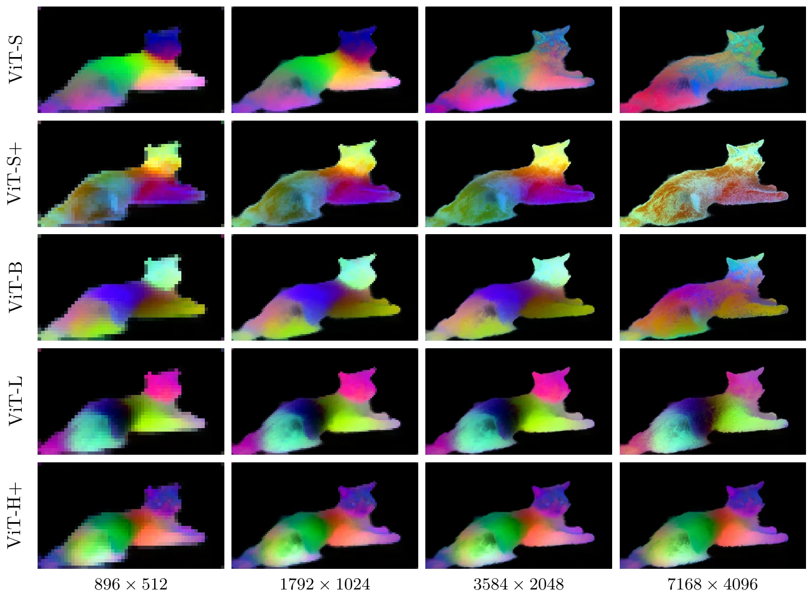
ConvNeXt 计算量小，适合卷积硬件，也更容易量化。蒸馏出 T、S、B、L 四个尺寸，和在 ImageNet-22k 上有监督训练的原版 ConvNeXt 比。全局任务在 256 和 512 两种分辨率下测，ADE20k 用 512，NYU 用 640。
| 尺寸 | 模型 | IN-ReaL | IN-R | Obj. | ADE20k | NYU↓ | |||
|---|---|---|---|---|---|---|---|---|---|
| 256 | 512 | 256 | 512 | 256 | 512 | ||||
| T | 监督 | 87.3 | 83.0 | 45.0 | 33.0 | 44.5 | 27.1 | 24.8 | 0.666 |
| T | DINOv3 | 86.6 | 87.7 | 73.7 | 74.1 | 52.6 | 58.7 | 42.7 | 0.448 |
| S | 监督 | 88.9 | 86.8 | 52.8 | 39.1 | 50.8 | 40.0 | 22.6 | 0.630 |
| S | DINOv3 | 87.9 | 88.7 | 73.7 | 74.1 | 52.6 | 58.7 | 44.8 | 0.432 |
| B | 监督 | 89.3 | 87.8 | 57.3 | 46.2 | 53.6 | 46.5 | 26.5 | 0.596 |
| B | DINOv3 | 88.5 | 89.2 | 77.2 | 78.2 | 56.2 | 61.3 | 46.3 | 0.420 |
| L | 监督 | 89.6 | 88.1 | 58.4 | 46.6 | 55.0 | 47.7 | 33.3 | 0.567 |
| L | DINOv3 | 88.9 | 89.4 | 81.3 | 82.4 | 59.3 | 65.2 | 47.8 | 0.403 |
表 15 · 蒸馏出的 ConvNeXt 与监督 ConvNeXt。照录原文。
256 分辨率下分布内分类略落后监督版，512 时反过来：监督版明显退化，DINOv3 版随分辨率变好。分布外分类全面大幅领先，稠密任务提升很大（CNX-T +17.9 mIoU，CNX-L +14.5）。从有 CLS 的 Transformer 蒸馏到没有 CLS 的卷积网络，作者认为说明了蒸馏流程的通用性。
DINOv3 CNX-T 和 CNX-S 两行的 IN-R（256 / 512）和 ObjectNet（256 / 512）都是 73.7、74.1、52.6、58.7，逐格相同；而 IN-ReaL、ADE20k、NYU 三列两行都不同，B 和 L 也都随尺寸上升。四个数完全重合的概率很低，我认为其中一行是复制错误。正文没有引用这几格。
按 §5.3 给蒸馏出的 ViT-L 训练文本编码器，同时对齐 CLS 和输出 patch。全局评测：CLIP 协议的零样本分类（IN1k、A、R、ObjectNet）和 COCO2017 图文检索（Recall@1）。patch 级评测：开放词汇分割（ADE20k、Cityscapes，mIoU）。
| 方法 | IN1k | A | R | Obj. | I→T | T→I | ADE20k | Cityscapes |
|---|---|---|---|---|---|---|---|---|
| CLIP | 76.6 | 77.5 | 89.0 | 72.3 | 57.9 | 37.1 | 6.0 | 11.5 |
| EVA-02-CLIP | 80.4 | 82.9 | 93.2 | 78.5 | 64.1 | 47.9 | 10.9 | 14.1 |
| dino.txt | 81.6 | 83.2 | 88.8 | 74.5 | 62.5 | 45.0 | 19.2 | 27.4 |
| SigLIP 2 | 83.1 | 84.3 | 95.7 | 84.4 | 71.4 | 55.3 | 10.8 | 16.3 |
| PE | 83.5 | 89.0 | 95.2 | 84.7 | 75.9 | 57.1 | 17.6 | 21.4 |
| DINOv3 dino.txt | 82.3 | 85.4 | 93.0 | 80.5 | 63.7 | 45.6 | 24.7 | 36.9 |
表 16 · 文本对齐的 ViT-L（序列长度都是 576）。照录原文。
相比对齐 DINOv2 的 dino.txt 全面更好；全局对齐好于 CLIP 和 EVA-02-CLIP，略逊于 SigLIP 2 和 PE；稠密对齐明显最好。
同一配方训练卫星图像版 7B，验证通用性。
SAT-493M：从 Maxar 0.6 米分辨率的正射 RGB 影像随机采 4.93 亿张 512 × 512 图块。超参与网页版相同，只改了 RGB 均值方差和训练长度：10 万步初始预训练（256 全局裁切）、1 万步 Gram 正则、8 千步 512 高分辨率微调，再蒸馏出 ViT-L。评测：冠层高度（自建 SatLidar，100 万张带 LiDAR 真值的 512 图块，8/1/1 划分，含 Tolan 等用过的 Neon 和圣保罗；以及 Open-Canopy，覆盖法国 8.7 万平方公里的 SPOT 6-7 影像加 LiDAR，4 通道，所以把 patch 嵌入层三个通道权重的均值复制成第 4 通道）；语义任务用 GEO-Bench（6 个分类 + 6 个分割）、LoveDA、iSAID、DIOR。
冻结骨干上训 DPT 头。卫星版 7B 在 SatLidar 验证、测试和 Open-Canopy 上创新高（MAE 2.4→2.2、3.4→3.2、2.42→2.02）；蒸馏的卫星 ViT-L 与 7B 相当，在 Neon 上反而最好（2.4，7B 2.6，Tolan 等 2.9）。网页版 7B 也不错，但不如卫星版，作者认为物理量估计这类任务受益于领域专门预训练。
| 方法 | 结构 | SatLidar Val | SatLidar Test | Neon Test | São Paulo | Open-Canopy | ||||
|---|---|---|---|---|---|---|---|---|---|---|
| MAE↓ | R²↑ | MAE↓ | R²↑ | MAE↓ | R²↑ | MAE↓ | R²↑ | MAE↓ | ||
| Tolan 等 (2024)* | ViT-L | 2.8 | 0.86 | 4.0 | 0.61 | 2.7 | 0.73 | 5.4 | 0.42 | — |
| Tolan 等 (2024) | ViT-L | 2.4 | 0.90 | 3.4 | 0.81 | 2.9 | 0.69 | 5.4 | 0.48 | 2.42 |
| DINOv3 Web | ViT-7B | 2.4 | 0.90 | 3.6 | 0.74 | 2.7 | 0.75 | 5.9 | 0.34 | 2.17 |
| DINOv3 Sat | ViT-L | 2.2 | 0.91 | 3.2 | 0.81 | 2.4 | 0.81 | 5.8 | 0.42 | 2.07 |
| DINOv3 Sat | ViT-7B | 2.2 | 0.92 | 3.2 | 0.82 | 2.6 | 0.74 | 5.5 | 0.51 | 2.02 |
* 为 Tolan 等原版在 Neon 上训练的解码器。照录原文。
冻结的卫星版和网页版 DINOv3 在 15 项分类、分割、水平框检测任务中的 12 项上创新高。GEO-Bench 上超过使用 6 个以上波段并做任务微调的 Prithvi-v2 和 DOFA，而 DINOv3 只用 RGB、骨干冻结。网页版 7B 在多数 GEO-Bench 任务和高分辨率分割、检测上也很强，LoveDA 和 DIOR 上领先。作者的结论：度量类任务（如冠层高度）领域专门预训练有利，语义类任务通用模型更好。
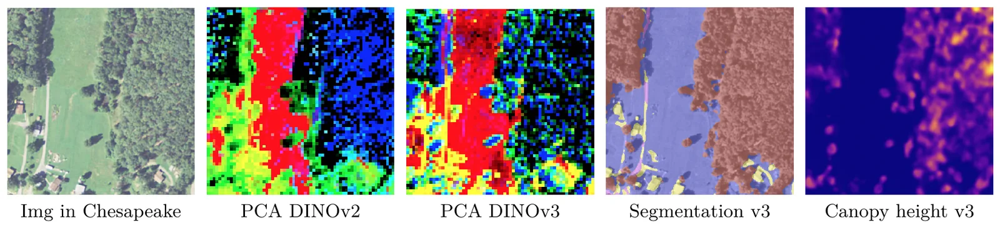
| 方法 | 结构 | 波段 | m-BEnet | m-brick-kiln | m-eurosat | m-forestnet | m-pv4ger | m-so2sat | 均值 |
|---|---|---|---|---|---|---|---|---|---|
| DOFA | ViT-L | all | 68.7 | 98.4 | 96.6 | 55.7 | 98.2 | 61.6 | 79.9 |
| Prithvi-v2 最佳 | ViT-L/H | all | 71.2 | 98.8 | 96.4 | 54.1 | 98.1 | 59.1 | 79.6 |
| Tolan 等 | ViT-L | RGB | 66.0 | 97.1 | 95.2 | 56.3 | 94.3 | 58.1 | 77.8 |
| DINOv3 Sat | ViT-L | RGB | 73.0 | 96.5 | 94.1 | 60.6 | 96.0 | 57.4 | 79.6 |
| DINOv3 Sat | 7B | RGB | 74.0 | 97.2 | 94.8 | 62.3 | 96.1 | 62.1 | 81.1 |
| DINOv3 Web | 7B | RGB | 74.6 | 97.7 | 97.0 | 57.9 | 98.3 | 63.8 | 81.6 |
表 18a · GEO-Bench 分类。
| 方法 | 结构 | 波段 | m-cashew* | m-chesapeake | m-NeonTree | m-nz-cattle | m-pv4ger-seg | m-SA-crop | 均值 |
|---|---|---|---|---|---|---|---|---|---|
| DOFA | ViT-L | all | 81.2 | 61.6 | 58.5 | 77.4 | 95.1 | 35.7 | 68.3 |
| Prithvi-v2 最佳 | ViT-L/H | all | 90.2 | 69.4 | 59.1 | 81.0 | 95.3 | 41.9 | 72.8 |
| Tolan 等 | ViT-L | RGB | 92.8 | 73.7 | 58.1 | 83.1 | 94.7 | 35.1 | 72.9 |
| DINOv3 Sat | ViT-L | RGB | 94.2 | 75.6 | 61.8 | 83.7 | 95.2 | 36.8 | 74.5 |
| DINOv3 Sat | 7B | RGB | 94.1 | 76.6 | 62.6 | 83.4 | 95.5 | 37.6 | 75.0 |
| DINOv3 Web | 7B | RGB | 96.0 | 76.5 | 66.4 | 83.7 | 95.9 | 36.8 | 75.9 |
表 18b · GEO-Bench 分割。* 按 Szwarcman 等转换成 6 类。照录原文；均值我逐行重算过，都对得上（四舍五入差 0.05 以内）。
| 方法 | 结构 | LoveDA | iSAID | DIOR |
|---|---|---|---|---|
| 此前最好 | — | 54.4（BillionFM, ViT-G） | 71.9（SkySense V2, Swin-G*） | 79.5（SkySense V2, Swin-G*） |
| 解码器 | — | UPerNet | UPerNet | Faster-RCNN |
| Prithvi-v2 | ViT-H | 52.2 | 62.8 | — |
| DINOv3 Sat | ViT-L | 54.4 | 62.9 | 72.7 |
| DINOv3 Sat | ViT-7B | 55.3 | 64.8 | 76.6 |
| DINOv3 Web | ViT-7B | 56.2 | 71.4 | 80.5 |
表 19 · 高分辨率遥感语义任务（LoveDA 1024、iSAID 896 mIoU，DIOR 800 mAP）。* 用了改进的 DINOv2 SSL 加 OpenStreetMap 监督对齐，iSAID 上报告 +0.8 mIoU。照录原文。
逐列取 DINOv3 三个版本中最好的和对手最好的比：GEO-Bench 分类 6 项赢 5 项（m-brick-kiln 97.7 < Prithvi 98.8）；分割 6 项赢 5 项（m-SA-crop 37.6 < 41.9）；LoveDA、iSAID、DIOR 赢 2 项（iSAID 71.4 < 71.9）。合计 12/15，和正文一致。“卫星版在 6 个分割任务中赢 5 个”也成立（同样只输 SA-crop）。
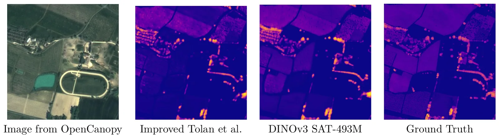
沿用 Touvron 等的方法：PUE 1.1，美国平均碳强度 0.385 kg CO₂eq/kWh，GPU 功耗按热设计功耗（A100 400 W，H100 700 W）。训练一个 DINOv3 7B 约 47 MWh，相当于一辆普通电动车开 24 万公里。整个项目粗估 900 万 GPU 小时，约 2600 吨 CO₂eq，大约是巴黎到纽约一天全部航班（按每天 12 班波音 777 往返、每班约 560 吨）的一半；只算 GPU 用电，不含制冷、制造和报废。
| 模型 | 结构 | GPU | 功率 | 步数 | GPU 小时 | PUE | 电量 (MWh) | 排放 (tCO₂eq) |
|---|---|---|---|---|---|---|---|---|
| MetaCLIP | ViT-G | A100-40GB | 400W | 390k | 368,640 | 1.1 | 160 | 62 |
| DINOv2 | ViT-g | A100-40GB | 400W | 625k | 22,016 | 1.1 | 9.7 | 3.7 |
| DINOv3 | ViT-7B | H100-SXM5 | 700W | 1,000k | 61,440 | 1.1 | 47 | 18 |
表 20 · 复现一次完整预训练的碳排放。照录原文。
DINOv3：\(61{,}440\times0.7\,{\rm kW}\times1.1=47.3\) MWh，\(\times0.385=18.2\) t；DINOv2：9.7 MWh、3.7 t；MetaCLIP：162.2 MWh、62.4 t（表里写 160）。全项目：\(9\times10^6\times0.7\times1.1\times0.385=2668\) t（按全部 H100 算），对应“约 2600 t”。按 §3.2 的 256 张 GPU，61,440 GPU 小时是 240 小时、约 10 天跑完 100 万步，约每秒 1.16 步（我的推算，假设全程 256 张 H100）。注意 61,440 只覆盖第一阶段的 100 万步，不含 Gram 精修、高分辨率适配和蒸馏。
作者总结：通过数据、规模和优化的细致设计，DINOv3 展示了无需人工标注的自监督学习的能力；Gram anchoring 缓解了长训练下稠密特征退化；配合高分辨率后训练和蒸馏，在不微调图像编码器的前提下在大量视觉任务上达到最好，并提供适应不同资源约束的一整套模型。
借用 An 等（LLM 领域）的定义：异常值是明显偏离分布均值的激活。DINOv3 训练中在 patch 层面和特征维度层面都看到了异常值。
结论：试了三种办法，4 个 register 最好，于是全文采用。
Darcet 等发现 DINOv2 里有高范数 patch，多在低信息的背景区域，承担 patch 和 CLS 之间的内部通信；CLIP 等也有。放大到 7B 时同样出现。这里用训练 15 万步的 7B 做初步比较（图 20）。
Register token。在输入序列里加几个额外 token 接管这份通信。按 Darcet 等的结论用 4 个，因成本高没做更多消融。
在注意力里加偏置。从 An 等的方案里选了两个改动小的：value gating（在注意力输出上加可学习偏置 \(\mathbf v'\in\mathbb R^d\)）和 attention bias（给 key、value 各拼一个可学习向量）：
value gating 让 patch 范数整体变高、明显异常值消失；attention bias 缓解但没根除。表现最好的是 register。
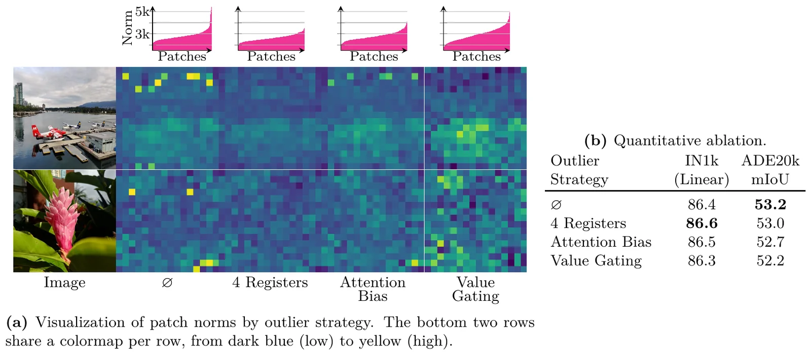
图 20b 里 ADE20k 最高的是不做任何处理的 ∅（53.2），4 Registers 是 53.0；register 只在 IN1k 上最高（86.6 对 86.4）。正文说“最好的表现来自 register”，只对分类成立。差距都在 0.2 以内，而且只训了 15 万步，作者自己也说只是初步信号。（这条不编号，因为只是对图表的读法。）
结论：少数通道数值特别大，用最后的 LayerNorm（或 BatchNorm）处理后再用；中间层要另行归一化。
加 register 解决了高范数 patch，但 7B 训练中又出现另一类：少数特征维度在所有 patch、所有图片上都异常大，随层数加深而变大，在输出层最大，并随训练变大。训练时用 L2 正则压制它们会掉性能，说明训练中有用；推理时删掉影响不大，说明携带的信息很少。最后的 LayerNorm 学会了大幅压低这些维度，所以建议下游用最后一层特征时先过最后的 LayerNorm；因为这些维度跨 patch 和图片一致，BatchNorm 也能压掉。用中间层时要小心：最后的 LayerNorm 的参数不一定适合中间层，作者在部分任务上看到性能下降，这时用 BatchNorm 或 PCA 之类的标准缩放更好；他们的分割（§6.3.2）和深度（§6.3.3）就是对中间层加了 BatchNorm。
| 年份 | 监督 | 出处 | 弱监督 | 出处 | 自监督 | 出处 |
|---|---|---|---|---|---|---|
| 2012 | 59.3 | Krizhevsky 等 | ||||
| 2015 | 78.6 | He 等 (2016) | 34.9 | Joulin 等 | ||
| 2017 | 80.9 | Xie 等 | ||||
| 2018 | 83.6 | Mahajan 等 | 38.2 | Caron 等 (2018) | ||
| 2019 | 84.3 | Tan 和 Le | 68.6 | He 等 (2020) | ||
| 2020 | 87.5 | Kolesnikov 等 | 75.3 | Caron 等 (2020) | ||
| 2021 | 88.6 | Dosovitskiy 等 | 88.4 | Radford 等 | 82.3 | Zhou 等 (2021) |
| 2023 | 89.5 | Dehghani 等 | 86.5 | Oquab 等 (2024) | ||
| 2025 | 89.3 | Bolya 等 | 88.4 | 本文 |
表 21 · 每种范式最大模型的 ImageNet top-1（弱监督和自监督为线性探针），年份按 arXiv 首次出现。原表 2013、2014、2016、2022、2024 行为空，这里省去。照录原文。
用 7B 各层特征测分类、分割、深度、跟踪、3D 对应。分类和分割随层数平滑上升；深度、跟踪、3D 对应在第 32 层附近达到峰值，几何类任务用较早的层可能更好。但中间层只比最后一层好一点，最后一层是好的默认选择。
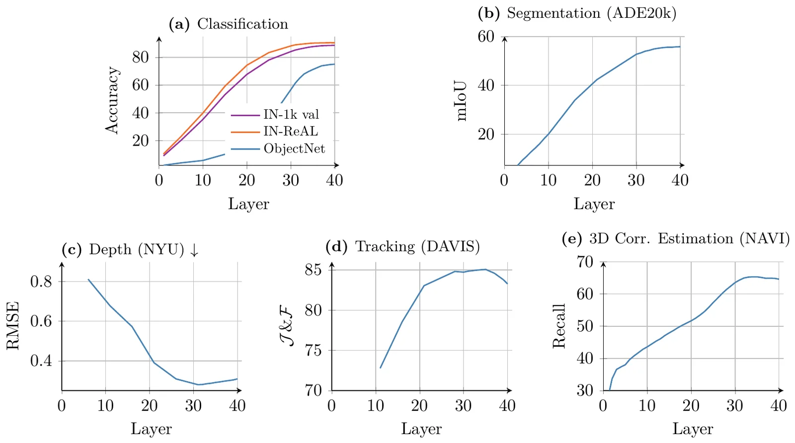
| 方法 | ViT | Food | C10 | C100 | SUN | Cars | Aircr. | VOC | DTD | Pets | Cal101 | Flowers | CUB | Avg |
|---|---|---|---|---|---|---|---|---|---|---|---|---|---|---|
| AM-RADIOv2.5 | g/14 | 96.5 | 99.5 | 95.0 | 82.8 | 95.4 | 91.7 | 90.3 | 88.6 | 96.7 | 98.8 | 99.7 | 91.5 | 93.9 |
| SigLIP | g/16 | 97.7 | 99.3 | 92.7 | 85.1 | 96.5 | 88.7 | 91.0 | 87.7 | 98.7 | 90.3 | 99.7 | 90.3 | 93.7 |
| PE-core | G/14 | 97.8 | 99.5 | 95.3 | 85.2 | 96.5 | 92.0 | 90.5 | 88.2 | 98.7 | 93.3 | 99.5 | 93.3 | 94.5 |
| AIMv2 | 3B/14 | 96.6 | 99.3 | 93.3 | 83.4 | 95.6 | 84.2 | 90.5 | 87.4 | 96.8 | 90.7 | 99.7 | 90.7 | 92.9 |
| EVA CLIP | 18B/14 | 96.9 | 99.5 | 95.4 | 85.0 | 95.4 | 81.6 | 90.2 | 87.1 | 98.4 | 90.6 | 99.6 | 90.6 | 92.9 |
| Franca | g/14 | 89.2 | 98.6 | 90.4 | 73.7 | 89.7 | 74.1 | 89.4 | 80.6 | 93.2 | 97.6 | 97.8 | 78.4 | 87.7 |
| DINOv2 | g/14 | 95.6 | 99.5 | 94.5 | 78.9 | 94.6 | 88.5 | 88.4 | 86.8 | 96.8 | 95.9 | 99.7 | 91.6 | 92.6 |
| Web-DINO | 7B/14 | 96.1 | 99.5 | 93.4 | 77.5 | 95.0 | 88.8 | 87.0 | 79.9 | 92.9 | 93.1 | 99.6 | 78.9 | 90.2 |
| DINOv3 | 7B/16 | 96.9 | 99.6 | 96.0 | 81.1 | 95.0 | 88.2 | 88.2 | 87.2 | 97.0 | 94.8 | 99.7 | 92.4 | 93.0 |
表 22 · Fine-S 12 个数据集逐项（线性探针）。照录原文，包括下面读者注 19 指出的可疑格。
| 方法 | ViT | Oxford M | Oxford H | Paris M | Paris H | Met GAP | GAP- | ACC | AmsterTime mAP |
|---|---|---|---|---|---|---|---|---|---|
| AM-RADIOv2.5 | g/16 | 72.8 | 50.7 | 93.3 | 85.3 | 30.5 | 65.9 | 69.0 | 46.7 |
| SigLIPv2 | g/16 | 49.3 | 25.1 | 79.3 | 60.9 | 0.0 | 0.0 | 0.2 | 15.5 |
| PE-core | G/14 | 57.4 | 32.7 | 83.6 | 68.9 | 10.6 | 34.8 | 44.9 | 23.1 |
| AIMv2 | 3B/14 | 55.0 | 28.8 | 85.6 | 71.4 | 29.5 | 67.3 | 69.9 | 23.1 |
| EvaCLIP | 18B/14 | 55.2 | 27.1 | 81.8 | 65.6 | 0.5 | 4.3 | 11.0 | 18.9 |
| Franca | g/14 | 44.6 | 14.3 | 73.8 | 51.6 | 27.2 | 54.3 | 57.7 | 21.1 |
| DINOv2 | g/14 | 78.2 | 58.2 | 92.7 | 84.6 | 44.6 | 73.0 | 75.2 | 48.9 |
| Web-DINO | 7B/14 | 64.1 | 31.2 | 89.8 | 80.3 | 35.2 | 67.3 | 71.3 | 30.6 |
| DINOv3 | 7B/16 | 81.1 | 60.7 | 93.3 | 87.1 | 55.4 | 77.7 | 80.7 | 56.5 |
表 23 · 实例识别全指标。照录原文。注意这里 AM-RADIOv2.5 写作 g/16，表 9 写 g/14；AIMv2 的 AmsterTime 是 23.1，表 9 是 14.6。两处表间不一致，原文如此。
| 方法 | COCO-Stuff 单 | TTA | Cityscapes 单 | TTA | VOC 2012 单 | TTA |
|---|---|---|---|---|---|---|
| 此前最好 | 53.7 | 53.7 | 86.3 | 87.0 | — | 90.0 |
| DINOv3（冻结） | 53.8 | 54.0 | 86.1 | 86.7 | 90.1 | 90.4 |
表 24 · 其他分割数据集（输入 1280 / 1280 / 1024），对手都微调了骨干。照录原文。
SigLIP、PE-core、AIMv2、EVA CLIP 四行的 Cal101 和 CUB 两格完全相同（90.3/90.3、93.3/93.3、90.7/90.7、90.6/90.6），其他五行都不同。再按 12 列重算平均：SigLIP 93.14（表里 93.7）、PE-core 94.15（94.5）、AIMv2 92.35（92.9）、EVA CLIP 92.53（92.9）都对不上；其余五行（AM-RADIO 93.88、Franca 87.73、DINOv2 92.57、Web-DINO 90.14、DINOv3 93.01）都对得上。反推让平均值成立的 Cal101 分别约 97.0、97.5、97.3、95.1，和其他模型 94 到 99 的 Cal101 同一量级。所以很可能是这一列填错，平均值是按正确数算的。表 8 的 Fine-S 引用的是表里的平均值。
见表 23 下方说明：AIMv2 的 AmsterTime 在表 9 是 14.6，表 23 是 23.1（23.1 恰好也是 AM-RADIO 和 PE-core 的值，像是串行）；AM-RADIOv2.5 的 patch 在表 9 是 14、表 23 是 16。不影响 DINOv3 的结论。（这条不编号。）
街道标志、商标、商品分类需要认字。7B 用 512 分辨率，其他按 patch 大小对齐序列长度。DINOv3 远好于 DINOv2，但和弱监督的 PE-core 仍差很多，因为没有图文数据，学不到字形关联；作者把它留给以后。
| 模型 | GTSRB | Logo-2K+ | FlickrLogos-32 | RP2K | Products-10K | SOProducts |
|---|---|---|---|---|---|---|
| DINOv2 ViT-g | 78.2 | 52.9 | 83.6 | 91.4 | 70.8 | 57.6 |
| PE-core ViT-G | 94.8 | 93.2 | 99.0 | 93.1 | 80.6 | 80.7 |
| DINOv3 ViT-7B | 87.5 | 86.0 | 86.3 | 94.7 | 74.5 | 65.2 |
表 25 · 文字密集数据集分类。照录原文。
按 Goyal 等的协议看不同收入和地区。DINOv3 在各收入段较一致，但低收入段比高收入段低约 23%；地区间欧洲和非洲的相对差超过 14%，比 DINOv2 的 17% 有改善。
| 方法 | 结构 | 低收入 | 中 | 高 | 非洲 | 亚洲 | 美洲 | 欧洲 |
|---|---|---|---|---|---|---|---|---|
| SEERv2 | RG-10B | 59.7 | 78.5 | 86.6 | 65.9 | 76.3 | 81.1 | 85.6 |
| DINOv2 | ViT-g/14 | 67.4 | 83.3 | 90.5 | 74.0 | 81.6 | 86.2 | 89.7 |
| DINOv3 | ViT-7B | 69.6 | 85.7 | 90.9 | 76.7 | 83.0 | 88.0 | 90.7 |
表 26 · 地理公平性。照录原文。按表算：\(1-69.6/90.9=23.4\%\)；欧洲对非洲 \(1-76.7/90.7=15.4\%\)，DINOv2 \(1-74.0/89.7=17.5\%\)，与正文“超过 14%”“超过 17%”相符。
multi-crop：学生看 2 个全局（256）和 8 个局部（112）裁切，共 370 万 token；教师（学生的 EMA）只看全局裁切。\(\mathcal L_{\rm DINO}\) 作用在学生所有局部裁切的 CLS 与教师两个全局裁切之间，以及两个模型不同全局裁切之间。学生的全局裁切以 50% 概率遮住 [0.1, 0.5] 比例的 patch，\(\mathcal L_{\rm iBOT}\) 作用在这些被遮 patch 和教师看到的对应可见 patch 之间。\(\mathcal L_{\rm DKoleo}\) 作用在学生第一个全局裁切的 CLS 上，16 个一小组。训练 100 万步，PyTorch 全分片数据并行，bfloat16 加 8 位浮点矩阵乘。常数学习率 0.0004，预热 10 万步，权重衰减 0.04，逐层学习率衰减 0.98，随机深度 0.4，教师 EMA 0.999。Gram 阶段 \(w_{\rm Gram}=2\)，每 1 万步更新 Gram 教师，最多 3 次。高分辨率适配的裁切组合见读者注 8。
对得上的：学习率 \(5\times10^{-5}\times4\times\sqrt{4096/1024}=4\times10^{-4}\)（train.py 第 169–171 行的 sqrt_wrt_1024 规则，配置第 152–157 行，每卡 16 × 256 卡 = 4096）；预热 100 个 epoch × 1000 步 = 10 万步；总长 1000 × 1000 = 100 万步；权重衰减 0.04；逐层衰减 0.98；drop path 0.4；fp8 只用在 blocks（fp8_enabled: true）；掩码比例 [0.1, 0.5]、概率 0.5。
对不上的：教师 EMA，附录 C 写 0.999，预训练配置第 168–172 行是 0.994，Gram 和高分辨率配置才是 0.999。另外预训练配置里 horizontal_flips: false、adamw_beta2: 0.99、clip_grad: 30、qkv_bias: false，论文都没提。
各项评测的数据集、指标和协议。下面按小节简述，细节折叠。
D.1 语义分割线性探针。ADE20k、VOC12、Cityscapes，mIoU。线性层接在冻结骨干的 patch 输出（过 LayerNorm）上，再加一个训练的 BatchNorm。AdamW，学习率在 {1e-4, 3e-4, 1e-3}、权重衰减在 {1e-4, 1e-3} 中搜索。
D.2 深度线性探针。NYUv2、KITTI，RMSE。设置同 D.1。
D.3 3D 关键点匹配。NAVI 图像边长 448/512（patch 14/16），SPair 896/1024。NAVI 按 Probe3D：取 1/4 视角，每个源视角配一个旋转不超过 120° 的目标视角，物体内每个 patch 匹配到目标图的 patch，保留余弦相似度最高的 1000 对，用已知位姿和深度算 3D 误差，阈值 1、2、5 cm 的召回取平均。每个骨干用最后一层特征，加与不加最后的 LayerNorm 都试，取较好的（有些模型加了反而差）。
D.4 无监督物体发现。VOC07、VOC12、COCO20K（COCO2014 trainval 中随机 19,817 张），每张图一个框，CorLoc（与任一真值框 IoU > 0.5 即正确）。TokenCut：patch 全连接图、边为特征相似度、Normalized Cut 找显著物体再拟合框。全分辨率输入，相似度阈值 0 到 0.4 每 0.05 搜索。
D.5 视频分割跟踪。DAVIS 2017（训练 60、验证 30 个视频）；YouTube-VOS 只有训练集公开，随机取 2758 个（80%）当训练、690 个当验证；MOSE 分成 1206 个验证、301 个测试。只跟踪第一帧出现的物体。非参数标签传播：当前帧每个 patch 与第一帧和若干过去帧的 patch 算余弦相似度，在空间邻域内取 k 个最相似的，标签加权平均；预测作为下一帧的软标签。缩放到短边为目标值并按 patch 大小取整（例：DAVIS 480 × 854 处理到 960，patch 16 时缩到 960 × 1712，得 60 × 107 特征图；patch 14 时 966 × 1708，得 69 × 122）。超参在 DAVIS 训练集上从表 27 的 18 组里选，用于全部数据集。
| 上下文帧数 | 邻域大小 | 形状 | Top-K | 温度 |
|---|---|---|---|---|
| 7 | 12 | 方形 | 5 | 0.2 |
| 7 | 12 | 圆形 | 5 | 0.2 |
| 7 | 5 | 方形 | 5 | 0.2 |
| 7 | 24 | 方形 | 5 | 0.2 |
| 7 | ∞ | — | 5 | 0.2 |
| 7 | 12 | 方形 | 5 | 0.01 |
| 7 | 12 | 方形 | 5 | 0.1 |
| 7 | 12 | 方形 | 5 | 0.7 |
| 4 | 12 | 方形 | 5 | 0.2 |
| 10 | 12 | 方形 | 5 | 0.2 |
| 15 | 12 | 方形 | 5 | 0.2 |
| 7 | 12 | 方形 | 3 | 0.2 |
| 7 | 12 | 方形 | 10 | 0.2 |
| 7 | 12 | 方形 | 15 | 0.2 |
| 15 | 12 | 圆形 | 10 | 0.1 |
| 15 | 24 | 圆形 | 10 | 0.1 |
| 15 | 36 | 圆形 | 10 | 0.1 |
| 15 | ∞ | — | 10 | 0.1 |
表 27 · 跟踪超参候选。原文高亮了被选中的一组，PDF 文本层不带高亮，所以这里没法标出是哪一行。
D.6 视频分类。训练：每个视频随机取 16 帧（记下时间戳），空间裁切覆盖 40% 到 100% 面积且所有帧共用；每帧作为独立 256 × 256 图像过 DINOv3，得 16 × 16 个 patch，丢掉 CLS；patch 特征线性投影到 1024 维，拼成 16 × 16 × 16 = 4096 长的序列，过 4 个自注意力块（位置信息用加性 sin-cos 和带随机空间旋转的 3D 分解 RoPE），再用一个无位置的可学习 query 做交叉注意力汇总，线性层出 logits。20 个 epoch，batch 64，交叉熵；学习率 6 个值 × 权重衰减 3 个值并行训练，90% 训练集更新、10% 选超参。推理：取首帧、末帧和中间均匀的共 16 帧，中心最大正方形缩到 256；TTA 按 V-JEPA 2 取多组帧和三个空间裁切（左中右）平均概率。基线 patch 16 用 256、patch 14 用 224，token 数一致；V-JEPA 2 喂整段视频，因其时间减半，把每个 token 复制一份对齐长度。
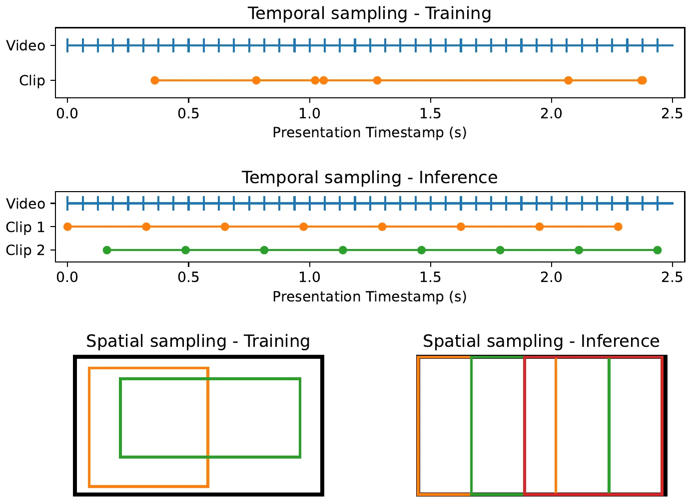
D.7 线性探针图像分类。ImageNet 及其变体（ImageNet-C 报 mCE），Fine-S 12 个数据集，Places205、iNat2018/2021。大数据集：CLS（过 LayerNorm）上训线性层，SGD 动量 0.9，10 个 epoch，batch 1024，学习率从 1e-4 到 5 共 15 个值、权重衰减 {0, 1e-5} 搜索，Inception 式随机裁切增强。Fine-S 按 DINOv2 用 scikit-learn 的 L-BFGS 逻辑回归。分辨率对齐到 1024 个 patch token，短边缩放后取中心正方形。
D.8 实例识别。Oxford、Paris 长边缩到 224 再中心裁成 224 × 224；AmsterTime 短边 256 再中心裁 224；Met 接近原分辨率（长边 508/512）。CLS 余弦相似度；Met 还要网格搜索 k 和 τ，并用 Met 训练集估计的 PCA 白化。
D.9 目标检测。COCO（80 类，11.8 万训练 / 5 千验证）、COCO-O（只评测），Objects365（250 万张、365 类）用于预训练。从 7B 的第 10、20、30、40 层取特征按通道拼接得 16384 维；编码器 6 个自注意力块、宽 768；解码器 6 个交叉注意力块，1500 个一对一 query 加 1500 个一对多 query。窗口策略：图像切成 3 × 3 窗口分别过骨干（如 1536 × 2304 切成 512 × 768 的窗，每窗 32 × 48 个 token，拼成 96 × 144），整图缩到 512 × 768 也过一遍再上采样到 96 × 144，两者通道拼接成 32768 维、96 × 144 个 token 送入编码器。三阶段：Objects365 1536 分辨率 22 epoch（batch 32，32 卡，学习率 5e-5，第 20 epoch 后除以 10）；Objects365 2048 分辨率 4 epoch（2.5e-5）；COCO 2048 分辨率 12 epoch（余弦从 2.5e-5 到 2.5e-6，改用 IA-BCE 损失，GIoU 权重升到 4）。Focal 2、L1 1、GIoU 2。测试短边 1536 或 2048 时 mAP 65.4 和 65.6；TTA 用 1536 到 2880 共 8 个分辨率加翻转、SoftNMS 合并，66.1。
小核对§6.3.1 正文说“Objects365 上 2048 分辨率 1 个 epoch”，D.9 第二阶段写“4 个 epoch”。两处不一致，原文如此。
D.10 语义分割。ADE20k、Cityscapes、COCO-Stuff、VOC 2012；COCO-Stuff 和 Hypersim 用于预训练（Hypersim 一半以上图像有 21 个以上物体）。去掉 ViT-Adapter 的 injector，Mask2Former 嵌入维度 2048；取第 10、20、30、40 层，都过最后的 LayerNorm 并加训练的 BatchNorm。COCO-Stuff 8 万步（余弦，预热 6 千，峰值 1.5e-5，1280 分辨率）；其他数据集先在 COCO-Stuff 上 8 万步，再 Hypersim 1 万步（2.5e-5），再 ADE20k 2 万步（3e-5）；Cityscapes 1.5e-5、VOC 1e-5；batch 16，AdamW。推理用滑窗（ADE20k 缩到 896，896 × 896 窗口、步长 596）；TTA 为 0.9 到 1.1 五个比例加翻转共 10 个预测，COCO-Stuff 只加翻转，Cityscapes 用 1.0、1.5、2.0 倍。
D.11 单目深度。与 DAv2 的区别：768 × 1024 分辨率，骨干冻结，DPT 头末尾 dropout 0.05；第 10、20、30、40 层过最后的 LayerNorm 加 BatchNorm；输出离散成 0.001 到 100 m 的 256 个均匀 bin；基础学习率 1e-3，PolyLR（幂 3.5），预热 1.2 万步；增强包括高斯模糊、噪声、自动对比度、均衡、颜色抖动、旋转、左右翻转。训练数据为 DAv2 的合成集（IRS、TartanAir、BlendedMVS、Hypersim、VKITTI2）。
D.12 VGGT。三处改动：图像 592 而非 518（作者说是为了和 DINOv2 的 patch token 数一致）；学习率 2e-4 降到 1e-4；用 ViT-L 四个中间层拼接，而不是只用最后一层。四层拼接对 DINOv3 有用、对 DINOv2 没用。接近原设置的未调版本（512、原学习率、最后一层）也已在所有基准上超过原 VGGT。
小核对“592 是为了和 DINOv2 的 token 数一致”：\(518/14=37\)，\(592/16=37\)，对得上。D.12 末尾写“image size 512”，按同样逻辑 \(512/16=32\)，token 数就不同了，这里的 512 可能是 518 之误，未核实。
D.13 遥感。骨干都冻结。GEO-Bench 分类训线性层 2400 步、batch 32、SGD 余弦，学习率在 1e-5 到 1 之间选；分割默认 DPT 解码器，学习率在四个值里选。LoveDA、iSAID 用 UPerNet，8 万步，batch 8，预热 1500；冠层高度用 DPT 头；检测用 Faster R-CNN 训 12 epoch。SatLidar 由 10 个子数据集组成（表 28）。
| 子数据集 | 图块数 | 用途 |
|---|---|---|
| Kalimantan | 86 | 训练/验证/测试 |
| OpenDC | 68 | 训练/验证/测试 |
| Brazil | 37 | 训练/验证/测试 |
| Mozambique | 144 | 训练/验证/测试 |
| Neon | 5366 | 训练/验证/测试 |
| CA20Graup | 99 | 训练/验证/测试 |
| CA17Duvall | 56 | 训练/验证/测试 |
| Netherlands | 13 | 训练/验证/测试 |
| Sao Paulo | 4 | 测试 |
| CA brande | 1 | 测试 |
表 28 · SatLidar 的组成（数据来源网址见原文第 67 页）。照录原文。
代码 facebookresearch/dinov3 提交 6876159（2026-07-15），DINOv3 License。只读未运行。和本页相关的位置：
| 论文里的东西 | 代码位置 | 对照结果 |
|---|---|---|
| ViT 结构，CLS + register + patch 顺序 | models/vision_transformer.py 第 112–115、190–220 行 | 序列是 [CLS, 4 个 storage（register）, patch]；输出字典把三者分开（第 249–259 行） |
| 最后的 LayerNorm（附录 A.2 建议用） | 同上第 163、249–251 行 | 默认一个 norm 同时作用于 CLS、register 和 patch |
| ViT-B/16 超参 | hub/backbones.py 第 277–313 行 dinov3_vitb16 | 768 宽、12 层、12 头、MLP 比 4（GELU）、4 个 register、mask_k_bias=True、LayerScale 1e-5、RoPE base 100、rescale 2 |
| ViT-7B 超参 | 同文件 dinov3_vit7b16，vision_transformer.py 第 407–416 行 | 4096 宽、40 层、32 头、SwiGLU 隐层 8192（读者注 2） |
| RoPE 与 box jittering | layers/rope_position_encoding.py；layers/attention.py 第 66–82 行 | 见读者注 4 |
| Gram 损失 式 (2) | loss/gram_loss.py 第 34–84 行；train/ssl_meta_arch.py 第 476–515、651–665 行 | MSE 平均而非平方和；教师特征双三次下采样（第 500 行）（读者注 5） |
| 精修和高分辨率配置 | configs/train/dinov3_vit7b16_gram_anchor.yaml、..._high_res_adapt.yaml | 读者注 6、7、8 |
| 多学生蒸馏 | train/multidist_meta_arch.py；configs/train/dinov3_vitl16_lvd1689m_distilled.yaml | 读者注 9 |
| dino.txt | eval/text/，configs/dinov3_vitl_text.yaml | 2 个头部块、CLS 与 patch 均值拼接、骨干冻结，和 §5.3 一致 |
Hugging Face 上 facebook/dinov3-vitb16-pretrain-lvd1689m 需要申请，脚本访问返回 401；我没有绕过。OpenWAM 的下载脚本（scripts/download_assets/download_visual_encoder.py 第 97–105 行）把 ModelScope 列为另一个来源，那里的 config.json 公开可读：hidden_size 768、num_hidden_layers 12、num_attention_heads 12、intermediate_size 3072、num_register_tokens 4、patch_size 16、rope_theta 100、pos_embed_rescale 2.0、key_bias false、use_gated_mlp false、layer_norm_eps 1e-5，和 dinov3_vitb16 的定义逐项对得上（key_bias false 对应 mask_k_bias=True，layernormbf16 的 eps 是 1e-5）。参数量按 \(12\times(4\times768^2+2\times768\times3072)+768\times3\times16^2\approx85.5\)M，加上偏置、LayerScale 和 5 个特殊 token 约 86M，与图 16a 一致。ModelScope 镜像与 HF 原件是否逐字节相同，未核实。
OpenWAM §4.1.2 比较“世界模型预测哪种隐变量”时，DINOv3 是两个表示式编码器之一。这里只说它用的是哪个检查点、怎么接上去；形状和结果的完整讲解在 OpenWAM 页的读者问答 问 2，不重抄。
dinov3-vitb16-pretrain-lvd1689m，即本文 §5.2 从 7B 蒸馏出的 ViT-B/16（8600 万参数，宽 768），冻结不训。last_hidden_state（已经过 DINOv3 自己的最后 LayerNorm）。Conv3d(C, 3072, 1×2×2)，每个 token 输入 4C：不加 S-VAE 时 3072，加了 192。结果 76.42% 对 90.18%（OpenWAM 图 7）。出处：OpenWAM 代码 commit 1dcaeea 的 openwam/model/video_backbone/encoder/dinov3.py（第 84–102 行时间池化，第 154 行无参 LayerNorm，第 232–250 行丢 token 与重排）。第 11 幕动画可以切换 S-VAE 看形状。
OpenWAM 页说的 768 维、24 × 20 网格、丢 CLS 和 register、首帧单独其余每 4 帧平均、4C = 3072 恰等于 DiT 宽度，和本文、DINOv3 代码、OpenWAM 代码都一致，我没找到矛盾。补两点：(1) OpenWAM 用的是经过 DINOv3 最后 LayerNorm 的输出，正好符合附录 A.2 的建议（最后一层特征先过最后的 LayerNorm 以压掉特征维度异常值），之后再叠一个无参 LayerNorm（transformers 的 modeling_dinov3_vit.py 里 last_hidden_state 就是 self.norm 的输出；OpenWAM 代码 dinov3.py 第 146–153 行的注释也说这一步“在常见情况下近似恒等”）。(2) 384 × 320 不是正方形，DINOv3 的 RoPE 用 separate 归一化，高宽各自铺满 \([-1,1]\)，所以非正方形输入不需要插值位置编码；384 和 320 介于预训练的 256 与高分辨率适配的 512/768 之间，局部裁切也训练过 112 到 336。
OpenWAM 页读者问答原先写视频流的 shift = 5，“对所有编码器相同”（2026-11-16 已改正）（依据 wan22_ti2v_5b.yaml 第 12 行）。但 OpenWAM 的 configs/model/video_backbone/encoder/dinov3.yaml 第 2 行（以及 vjepa21.yaml）在注释里给的启用命令是 model.video_backbone.from_scratch=true model.video_backbone.shift_video=12.0 model/video_backbone/encoder=dinov3，即建议 DINOv3 和 V-JEPA 2.1 用 shift = 12。这与 RAE 论文“shift 应随维度增大”的建议方向一致。论文图 7 的 DINOv3 变体实际用 5 还是 12，论文和代码都没直接说，标“未核实”。如果用了 12，OpenWAM 页“所有编码器都用 shift = 5，可能拖累高维变体”这句推测就不成立。OpenWAM 页现已改成“默认 5，表示式编码器的示例命令用 12，图 7 用哪个未核实”，并补了按 RAE 公式算的值（DINOv3 约 13.4）。
以下各条是本页加的核算或对照，不属于论文内容。点编号跳到对应位置。
另有三条不编号的小核对：图 20b 的 ADE20k 其实是“不处理”最高（见此）；表 23 与表 9 有两格出入（见此）；D.9 和 §6.3.1 的 epoch 数、D.12 的 512 各有一处出入（见附录 D 折叠部分）。
论文没写、我也没找到的：LVD-1689M 之外检索数据和公开数据在混合里的具体比例；精修阶段的确切长度；ViT-H+ 和 ConvNeXt 的蒸馏配置；表 27 被选中的那一组超参。
文中提到的数据集、基准和方法。链接在 2026 年 11 月 16 日用脚本核对：除标注的以外都返回 200。
| 名称 | 是什么 | 主页 | 论文 |
|---|---|---|---|
| DINOv3 | 本文 | 代码 | 2508.10104 |
| DINOv2 | 前作 | github.com/facebookresearch/dinov2 | 2304.07193 |
| ImageNet | 预训练数据之一、分类评测（脚本访问超时，浏览器可开） | image-net.org | Deng 等，CVPR 2009 |
| Mapillary SLS | 预训练数据之一 | mapillary.com | Warburg 等，CVPR 2020 |
| ADE20k | 语义分割（官方站脚本超时，用 GitHub） | github.com/CSAILVision/ADE20K | 1608.05442 |
| Cityscapes | 街景分割 | cityscapes-dataset.com | 1604.01685 |
| PASCAL VOC | 分割、物体发现 | host.robots.ox.ac.uk | Everingham 等，IJCV 2010 |
| NYUv2 | 室内深度 | cs.nyu.edu | Silberman 等，ECCV 2012 |
| KITTI | 室外深度 | cvlibs.net | Geiger 等，IJRR 2013 |
| Probe3D | 3D 对应评测协议 | github.com/mbanani/probe3d | 2404.08636 |
| NAVI | 几何对应 | navidataset.github.io | 2306.09109 |
| SPair-71k | 语义对应 | cvlab.postech.ac.kr | 1908.10543 |
| COCO | 检测、物体发现、检索 | cocodataset.org | 1405.0312 |
| DAVIS 2017 | 视频分割跟踪 | davischallenge.org | 1704.00675 |
| YouTube-VOS | 视频分割跟踪 | youtube-vos.org | 1809.03327 |
| MOSE | 复杂场景视频分割 | henghuiding.com/MOSE | 2302.01872 |
| UCF101 | 视频分类 | crcv.ucf.edu | 1212.0402 |
| SSv2 | 动作理解视频分类 | qualcomm.com | 1706.04261 |
| Kinetics-400 | 视频分类 | github.com/google-deepmind/kinetics-i3d | 1705.06950 |
| ObjectNet | 分布外分类 | objectnet.dev | Barbu 等，NeurIPS 2019 |
| ImageNet-V2 | ImageNet 新测试集 | GitHub | 1902.10811 |
| ImageNet-ReaL | 重新标注的标签 | GitHub | 2006.07159 |
| ImageNet-R | 风格化版本 | GitHub | 2006.16241 |
| ImageNet-Sketch | 素描版本 | GitHub | 1905.13549 |
| ImageNet-A | 自然对抗样本 | GitHub | 1907.07174 |
| ImageNet-C | 常见损坏 | GitHub | 1903.12261 |
| iNaturalist | 物种细粒度分类 | GitHub | 1707.06642 |
| Revisited Oxford/Paris | 地标检索 | GitHub | 1803.11285 |
| Met | 艺术品检索 | cmp.felk.cvut.cz/met | 2202.01747 |
| AmsterTime | 新旧街景检索 | GitHub | 2203.16291 |
| COCO-O | 分布外检测 | GitHub | 2307.12730 |
| Objects365 | 检测预训练 | objects365.org | Shao 等，ICCV 2019 |
| COCO-Stuff | 分割预训练 | GitHub | 1612.03716 |
| Hypersim | 合成室内场景 | GitHub | 2011.02523 |
| ETH3D | 深度评测 | eth3d.net | Schöps 等，CVPR 2017 |
| ScanNet | 深度评测、双视图匹配 | scan-net.org | 1702.04405 |
| DIODE | 深度评测 | diode-dataset.org | 1908.00463 |
| RealEstate10K | 相机位姿 | google.github.io/realestate10k | 1805.09817 |
| CO3Dv2 | 相机位姿 | GitHub | 2109.00512 |
| DTU | 多视图深度 | roboimagedata.compute.dtu.dk | Jensen 等，CVPR 2014 |
| GEO-Bench | 遥感基准 | GitHub | 2306.03831 |
| Open-Canopy | 冠层高度 | GitHub | 2407.09392 |
| LoveDA | 土地覆盖分割 | GitHub | 2110.08733 |
| iSAID | 遥感实例分割 | captain-whu.github.io/iSAID | 1905.12886 |
| DIOR | 遥感检测（作者主页） | gcheng-nwpu.github.io | 1909.00133 |
| RoboTwin | OpenWAM §4.1.2 用的双臂仿真基准 | robotwin-platform.github.io | 2506.18088 |
| OpenWAM | 本站精读，DINOv3 在那里当视频编码器 | 本站 | arXiv 2609.07398 |